LE JEU DE TRICTRAC RENDU FACILE
Pour toute personne d'un esprit juste et persévérant
OUVRAGE CONTENANT DES RÈGLES ET DES TABLES ENTIÈREMENT NOUVELLES, SERVANT A CALCULER FACILEMENT LES CHANCES POUR ET CONTRE CHACUN DES DEUX JOUEURS, ET N'EXIGEANT QUE LA CONNAISSANCE DES PREMIERS ÉLÉMENTS DE L'ARITHMÉTIQUE.
(La première partie est destinée aux personnes qui ne connaissent absolummt point ce jeu ; la deuxième à celles qui veulent acquérir une grande force.)
PAR J. L. Ancien élève de l'École Polytechnique, officier d'artillerie, professeur de mathématiques à l'École militaire de La Flèche.
TOME PREMIER
1852
NOTICE
L'ouvrage n'a été composé que dans le but de venir en aide à la Communauté de la Providence de la Flèche, à laquelle il en a été fait don par son auteur, qui en a fait imprimer à ses frais une édition à mille exemplaires.
Notice sur la communauté de la providence de la flèche,
Dont les Statuts ont été approuvés par ordonnance royale du 23 mars 1828.
L'Association se propose trois fins :
La première, de s'employer à l'éducation des jeunes » filles, tant externes que pensionnaires. Les écoles sont » ouvertes à toutes celles qui veulent les fréquenter.
La seconde est l'hospitalité. On reçoit des orphelines, des enfants de parents pauvres, des personnes infirmes, grabataires, caduques, incurables, des deux sexes. On » reçoit aussi, comme pensionnaires libres, des personnes » des deux sexes qui veulent se retirer du monde ou vivre » à moindres frais.
La troisième est le soulagement gratuit des malades à domicile, tant le jour que la nuit ; ce qui comprend toutes les oeuvres de miséricorde dont les malades, soit » riches, soit pauvres, peuvent avoir besoin.
Les religieuses de la Providenee de la Flèche accomplissent leur triple mission avec un zèle au-dessus de tout éloge. Mais , si les ressources pécuniaires répondaient à leur dévoûment, elles pourraient recevoir un plus grand nombre d'orphelines et d'incurables, soit gratuitement, soit pour des pensions excessivement modiques. Les personnes donc qui achèteront cet ouvrage, outre l'avantage personnel qu'elles pourront en retirer, feront une œuvre de charité. Elles contribueront à fournir au pauvre qui n'a rien le logement, la nourriture et le vêtement.
(Communiqué par M. l'Aumonier de Vélablisumcut.)
Préface à la version électronique
Les table des matières ont étés omises de cette transcription
PRÉFACE
Le jeu de trictrac plaît beaucoup à tous ceux qui le savent; mais on n aime point à l enseigner aux autres, parce que c'est une chose longue et ennuyeuse pour le maître et l'élève. Il faut donc un livre pour l'étudier. Voulant l'apprendre , je consultai tous les ouvrages qui parlent de ce jeu , à la Bibliothèque nationale, à celle de l'Arsenal. — Le traité publié par Charpentier n'est pas sans mérite; j'y ai emprunté plusieurs choses, entre autres le mot table, pour désigner chacune des quatre parties du tablier. Mais il est trop court. J'ai vu les éditions publiées en 1698,1701,1715, troisen dix-septans. Le Grand Trictrac (1738, 1766) est de Soumille, savant ecclésiastique, correspondant de l'Académie royale de Paris. Ce livre est fort détaillé, et j'en ai tiré plusieurs choses ; mais il est plein de fautes. Guiton l'a critiqué très sévèrement, tout en lui prenant beaucoup de questions difficiles et d'expressions nouvelles. Guiton critique aussi le Jeu de Trictrac (1776, chez Nyon), par Fallavel.
Le dix-neuvième siècle n'a produit que deux traités sur ce jeu : le second de ces ouvrages, Cours complet de Trictrac (1818, 120 pages in-12), est de Lepeintre des Roches, qui note les marqués sur un papier et avec des jetons; le premier, Traité complet du jeu de Trictrac ( in-8", 1816, 1822 ) , est de Guiton. Ce livre est bien meilleur que l'autre. Composé par un homme qui comprenait le trictrac et le fait comprendre, il contient d'excellentes choses, et j'y ai pris ce qu'il y a de bon. Il y a plus de vingt ans , j'eus de la peine à en trouver un exemplaire. Il s'y trouve beaucoup de fautes sur l'arithmétique; il donne souvent le même nom à des choses fort différentes. Ce livre ne pouvait servir qu'à ceux qui savaient un peu le jeu. L'auteur ne dit rien de la notation des marqués avec un papier ni du coup de rentrer en bredouille.
AVERTISSEMENT
Le premier volume, étant destiné aux commençants , aux personnes qui ignorent absolument le jeu, doit être très élémentaire, très détaillé. Je n'ai pas dû expliquer deux choses en même temps , car une explication ne doit s'appuyer que sur ce qui est déja connu et bien su. J'ai pris grand soin de ne jamais employer le même mot pour désigner deux choses différentes : par exemple, les expressions petit jan, grand jan, jan de retour, points, tenir, case, jan, produit, ne doivent être employées que dans un seul sens : petit jan, ne doit exprimer que le plein fait dans la 1ere table ; grand jan, celui fait dans la 2e ; jan de retour, celui fait dans la 1re table de l'adversaire ; points, les points qui servent à faire des trous ; — tenir, rester ou ne pas s'en aller ; — case, deux ou plusieurs dames sur une flèche ; — jan, l'un quelconque des huit jans ; — produit, le résultat de la multiplication.
En composant ce livre, je me suis toujours rappelé la manière d'enseigner de mon ancien professeur M. Dinet : il nous montrait la route et nous apprenait à travailler; avec lui, il était impossible de ne pas réussir, quand on le voulait fortement. Je lui suis redevable d'avoir appris en dix mois ce qu'il fallait savoir pour entrer à l'École polytechnique. Sans lui j'aurais été simple soldat en 1811.
Je dois aussi de la reconnaissance au bon curé Bricqueville. En 1815, après le licenciement de l'armée, je me retirai chez mon père à Auvers, près Sablé, où l'excellent curé me témoigna beaucoup d'amitié, et eut la grande patience de m'apprendre le trictrac. Il est maintenant à Chailland, près Laval.
INTRODUCTION
Le trictrac est un jeu où, à la vérité , domine le hasard, dont l'influence, s'exerçant sur chaque coup, influe notablement sur les succès ou les revers ; mais ce hasard peut être modifié par des calculs. Pour y parvenir, l'habileté consiste à employer à propos la théorie des probabilités. Cette théorie, lorsqu'elle est bien connue et qu'on en sait faire une juste application, peut en partie régler ou du moins modifier cette influence du sort, et rendre probable ce qui par sa nature est incertain : c'est en cela que consiste la science du trictrac. Il est donc nécessaire de bien connaître les différents nombres de chances, d'en étudier les diverses combinaisons, et surtout de n'en jamais négliger l'application, même dans les coups qui pourraient paraître sans importance. Souvent le sort de toute une partie dépend d'un coup mal joué dans l'origine , et qui influe sur tous les suivants. On voit des joueurs se plaindre de la contrariété du sort et des rigueurs qu'il leur fait constamment éprouver, lorsqu'ils ne devraient imputer leurs revers qu'à leur négligence : car les mêmes coups qui sont contraires et désavantageux eussent peut-être été favorables si ces joueurs n'eussent pas eux-mêmes préparé la ruine de leur jeu par une conduite fautive et en opposi- tion avec les véritables principes.
Cette observation tend à prouver combien est nécessaire et indispensable la connaissance des Conseils que j'ai donnés, et spécialement des calculs qui en sont la base. En suivant les règles imprimées en lettres italiques, les joueurs connaîtront avec certitude et facilité les chances qui, dans les différentes positions, leur seront contraires ou favorables. Ces règles pourront être utiles même aux joueurs les plus exercés, parce qu'elles sont courtes et simples. Excepté dix ou douze, aucune de ces règles n'était connue.
Pour le classement des matières, j'ai suivi l'ordre le plus naturel, celui dans lequel se présentent les différents points. Après cette Introduction, j'ai donné la table des matières du premier volume, puis la table alphabétique des termes de ce jeu, avec le renvoi à tous les articles où il en est question. Le traité est divisé en cinq sections. La première contient les articles suivants : les commencements, les trois pleins, les autres jans et battre ; — la deuxième, points, trous, conventions sur les points gagnés ou donnés, s'en aller, écoles, nouvelles lois ; — la troisième présente les différents genres de parties; — la quatrième contient l'arithmétique; — la cinquième, les conseils.
Au jeu de trictrac, ainsi que dans les sciences et les arts d'une bien plus haute importance, la théorie, quoique nécessaire, est néanmoins insuffisante, si elle n'est accompagnée de la pratique. Cette pratique rend familière l'application des conseils fournis par la théorie. C'est par l'habitude que l'on acquiert ce prompt et facile coup d'œil qui fait saisir à l'instant même ce qui est important et ce qu'il faut faire, chose impossible à celui qui ne posséderait que la théorie. Ainsi l'une et l'autre se prêtent un mutuel appui ; l'une et l'autre contribuent à l'instruction du joueur. La théorie sans la pratique, la pratique sans la théorie, ne peuvent former que des joueurs médiocres.
Celui qui désire faire des progrès à ce jeu doit préférer se mesurer avec des joueurs qui lui sont supérieurs. C'est en méditant sur la manière dont ils jouent les coups difficiles ou décisifs , c'est en recherchant les motifs qui déterminent dans telle ou telle circonstance leur manière de jouer et en comparant leur méthode avec la sienne, qu'il peut se perfectionner et arriver au but où il aspire. Au contraire, avec un joueur d'une force inférieure ou même égale à la sienne, il ne peut espérer faire aucun progrès, parce qu'il n'a plus d'objet de comparaison. Il n'a rien qui excite son émulation, qui intéresse et pique . sa curiosité et stimule son désir de s'instruire. Il pourra même s'accoutumer, à négliger les conseils sur des points où il n'est pas encore bien affermi, et contracter ainsi l'habitude de jouer de caprice la plupart des coups, sans égard pour les calculs et les probabilités. Aux personnes qui veulent devenir d'une certaine force je ne puis trop recommander de faire les calculs faciles pour les coups un peu importants, et de suivre toujours les conseils donnés. Je crois avoir réussi à aplanir les difficultés de ce jeu, auquel on s'attache avec d'autant plus de prédilection qu'on le connaît mieux et qu'on s'y exerce davantage.
SECTION I.
CHAPITRE Ier. Définitions — commencements du jeu — trictrac toujours ouvert
§1. DÉFINITIONS.
1. Définition du trictrac.
Le trictrac se joue avec deux dés et trente dames, sur un tablier composé de deux parties, divisées chacune par six petites flèches d'ivoire de chaque côté, qui sont alternativement de deux couleurs différentes, et sur lesquelles on place les dames conformément aux règles du jeu.
2. Origine du mot trictrac.
Beaucoup de personnes pensent que le trictrac tire son nom du bruit que font les dés, les dames et les cornets ; d'autres disent que ce nom vient de deux mots grecs qui signifient trois fois difficile.
3. Nombre des joueurs.
On ne peut jouer au trictrac que deux personnes à la fois.
4. Désignation des joueurs.
J'adresserai toujours la parole à un même joueur, que j'appellerai vous; l'autre joueur sera désigné parle mot Vadversaire. Tout ce que je vous dirai s'appliquera également à l'adversaire , sans qu'il soit nécessaire de le dire : car les droits et les devoirs sont égaux pour les deux joueurs. Si cet adversaire n'existe pas, vous le supposerez, et vous jouerez pour lui, c'est-à-dire que vous jetterez les dez, placerez les dames, et ferez généralement tout ce que cet adversaire aurait à faire. Vous en prendrez ensuite un véritable , auquel vous montrerez le peu que vous saurez. Je supposerai que l'adversaire est devant le haut du trictrac.
5. Objets nécessaires.
Il faut une boîte ou une table, qu'on appelle aussi trictrac; deux cornets, trente dames (quinze d'une couleur et quinze d'une autre), trois jetons, deux fichets, un pavillon, deux flambeaux ou une lampe.
6. Trictrac en botte ou à charnières.
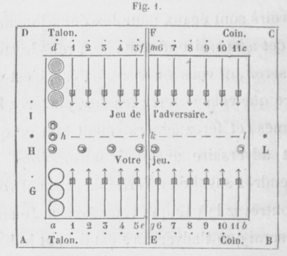
Etant ouvert (fig. 1), le trictrac est COITlposé de quatre fortes bandes , deux grandes , AB, DC, et deux petites, AD, BC, assemblées entre elles, formant un carré long ou rectangle; le fond est formé de planches minces. Les grandes bandes sont coupées par le milieu E, F; ces deux milieux sont réunis par une double bande qui partage le trictrac en deux parties égales, réunies par deux charnières. Cette bande de séparation est double, afin que rien ne puisse tomber quand le trictrac est fermé et contient les objets nécessaires pour jouer.
7. Tablier.
C'est le fond du trictrac , la partie creuse , celle où sont les flèches. On lui donne ce nom parce qu'il renferme tout ce qu'il faut pour jouer. Il est divisé en quatre parties, qu'on appelle tables : aeih, ghlk, klcm, hifd.
8. Trictrac en table.
Voici en quoi il diffère de l'autre : il est fixé à une table, ses grandes bandes ne sont pas divisées , il n'a pas de charnières pour le fermer, il faut le couvrir avec une tablette.
9. Bandes.
Les quatre bandes qui entourent le tablier servent à arrêter les dés que l'on y jette et les dames que l'on y arrange. Elles sont percées de trous.
10. Flèches.
Marques longues, terminées en pointe , et tracées au fond du trictrac. Il y en a vingt-quatre , alternativement blanches et vertes ou noires, en sorte que les blanches d'un joueur sont vis-à-vis les vertes de l'autre.
11. Trous.
Sur les deux grandes bandes il y a vingt-quatre trous vis-à-vis les vingt-quatre flèches ; sur les bandes latérales il y en a trois.
12. Dames.
Morceaux d'ivoire ou de bois, plats et arrondis. Il y a quinze dames blanches pour un joueur, quinze vertes ou noires pour l'autre. Leur grandeur en diamètre doit être telle que six remplissent la largeur du demi-tablier, à peu près cinq centimètres et demi.
13. Talon.
Première flèche, sur laquelle les joueurs rangent leurs dames en trois piles, vous à votre gauche, l'adversaire à sa droite. Ces flèches sont de couleur différente, comme on l'a vu au n°10.
14. Cornet.
Petit vase de cuir dans lequel on remue les deux dés avant de les jeter. Chaque joueur en a un.
15. Dés.
Petit morceau d'ivoire, de figure cubique ou à six faces égales, dont chacune est marquée d'un nombre différent de points, depuis un jusqu'à six. La somme des points de deux facea opposées est sept. Il en faut deux.
16. Nombres des dés.
Des six nombres que peut présenter chaque dé, on ne s'occupe que de celui de la face de dessus. Toujours on se contente de dire les nombres, le nombre.
17. Coup simple. Doublet.
Chaque nombre d'un dé pouvant se combiner avec les six nombres de l'autre dé, il y a bien plus de coups à nombres inégaux qu'à nombres égaux : c'est pour cela que les premiers sont appelés coups simples, et les autres doublets. Les premiers s'énoncent en nominant d'abord le plus grand nombre : on dit six-cinq, quatre-deux, trois et as. L'as est le seul nombre devant lequel on prononce la conjonction et.
Les doublets ont des noms particuliers: deux as, deux deux, deux trois, deux quatre , deux cinq , deux six, s'appellent beset, double-deux, terne, carme, quine, sonnez.
18. Jeton.
Pièce ronde et plate, en ivoire ; il en faut trois. Ceux qui ont plus d'épaisseur, presqu'un demi-centimètre, et qui ont moins de diamètre en dessus et en dessous qu'au milieu de leur épaisseur, sont plus faciles à pousser et à prendre.
19. Fichet.
Petite cheville en ivoire, ou petit plumet de soie à deux panaches. Chaque joueur en a un, qu'il place dans le trou de la bande latérale, près de son talon.
20. Pavillon.
Marque façonnée en étendard, qui se place dans le trou du milieu de la bande latérale qui est du côté des deux talons.
21. Eclairage.
Si l'on n'a pas de lampes, on emploie deux petits flambeaux dont la tige entre dans le trou du milieu de chaque bande latérale.
§2. COMMENCEMENTS. — PLACEMENT. — PRIMAUTÉ. JOUER SES DAMES. - TRICTRAC TOUJOURS OUVERT.
22. Nombre possible de joueurs.
Une personne peut étudier le jeu seule, mais pour le jouer il faut être au moins - deux. On verra plus tard comment on joue quand on est trois , quatre, et même cinq.
23. Place du trictrac.
Si l'on est près d'une fenêtre, on tourne du côté opposé la bande près de laquelle sont les deux talons , pour éviter l'ombre.
24. Place des joueurs.
Si vous voulez honorer la personne avec laquelle vous jouez, vous devez faire en sortè qu'elle ait ses dames à sa droite , à moins qu'elle ne préfère les avoir à sa gauche. On doit s'accoutumer à jouer d'un côté quelconque.
25. Choix des dames. Places des objets.
Vous laissez à l'autre joueur le choix des dames. Hâtez-vous de mettre vos dames en trois piles sur votre talon, la première touchant la grande bande. Les jetons se mettent près de la petite bande, entre les deux talons ; c'est leur talon , leur point de départ. Les fichets se placent dans les trous de la petite bande, près des talons. Le pavillon se met dans le trou milieu de la petite bande, du côté des talons.
26. Places des joueurs. Numéro des flèches. Nombre des dames.
Je supposerai toujours que vous êtes devant le milieu de la grande bande AB , qui est en bas. L'adversaire est vis-à-vis vous. La moitié inférieure du tablier sera votre jeu, l'autre moitié sera l_e jeu de l'adversaire_. Votre talon sera à gauche, l'adversaire aura le sien à sa droite. Vos onze autres flèches seront numérotées 1, 2, 3,... , 10, 11. Les onze flèches de l'adversaire le seront de même. Vous aurez toujours les dames blanches.
27. Dessin des figures.
Pour plus de clarté, j'ai multiplié les figures. Le dessin ne pouvant indiquer que trois dames par flèche, leur nombre réel est marqué par un chiffre placé en dessus.
28. Primauté.
Les dames étant sur les deux talons, vous vous hâtez de mettre les dés dans votre cornet, vous les agitez un peu, et les lancez de manière qu'ils touchent la bande opposée ou les dames de l'adversaire ; vous dites en même temps : Je vous présente les dés, ou Coup et dés. Vous examinez tous les deux les deux nombres amenés : si le nombre le plus grand est plus près de votre bande que n'est le plus petit, le coup est pour vous, et vous le jouez comme je dirai au numéro suivant.
L'adversaire prend ensuite les dés et les jette en frappant votre bande ou vos dames; il joue son coup avec ses dames. Vous jetez les dés à votre tour, et chacun des deux joueurs joue ainsi alternativement jusqu'à la fin. Vous ne devez lever les dés que quand radversaire a nommé et joué ses nombres.
Lorsque vous jetez les dés la première fois, s'il arrive que le nombre le plus faible soit le plus près de votre bande, ce coup est pour l'adversaire, et il le joue. Vous reprenez les dés et les jetez; ce coup est pour vous.
Si les deux dés ont des nombres égaux, ou s'ils sont à la même distance d'une bande, le coup est nul ; l'autre joueur jette les dés.
La primauté, ou le droit de jouer le premier coup avec ses dames, appartient à celui des deux joueurs qui a le plus grand nombre plus près de lui que le plus petit.
29. Jouer ses dames. Noms des flèches.
Pour jouer un coup avec ses dames, il faut avancer deux dames chacune d'autant de flèches qu'il y a d'unités dans le nombre correspondant. Par exemple, pour beset, qu'on peut écrire 1-1, on prend au talon deux dames, que l'on met sur la première flèche, la plus voisine, marquée 1 (fig. 1), et qui est la flèche de l'as. Si vous avez ensuite trois et as, que l'on écrit 3-1, vous mettez une dame sur la flèche première et une sur la troisième flèche. Vous avez alors onze dames au talon, trois à la première flèche, une à la troisième. Pour 6-4, que l'on doit énoncer six-quatre, on compte quatre flèches à partir du talon, puis six flèches, et vous arrivez à la première flèche de la deuxième table. Il y a ainsi neuf dames au talon , trois à la première flèche, une à la troisième , une à la quatrième, une à la sixième (fig. 2).
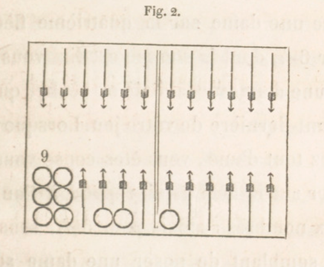
30. Tout a bas. Tout d'une. Repos.
Au lieu de jouer un coup avec deux dames , ce qu'on appelle mettre tout à bas, on peut le jouer avec une seule dame, que l'on avance d'autant de flèches qu'il y a d'unités dans la somme des nombres des deux dés : c'est ce qu'on appelle jouer tout d'une. Ainsi on peut jouer 1-1 en mettant une dame sur la deuxième flèche ; pour 3-1 on place une dame sur la quatrième flèche ; pour 6-4, dont la somme est dix, vous placez une dame sur la dixième flèche, qui est l'avant-dernière de votre jeu. Lorsque vous jouez tout d'une, vous êtes censé vous reposer sur la flèche qui répond à l'un des deux nombres: ainsi, pour 6-4, vous faites semblant de poser une dame sur la quatrième flèche , en disant 4, 6, ou sur la sixième, en disant 6, 4, et dans ces deux cas vous arrivez à la dixième flèche. Les flèches quatrième et sixième sont appelées les deux repos. Si le coup à jouer est un doublet, il n'y a qu'un repos; pour 4-4, fe repos est à la quatrième flèche , et la dame va du talon à la huitième flèche.
31. Dames abattues.
Aux coups suivants, vous pouvez jouer tout à bas, ou tout d'une , de votre talon ou des dames déjà jouées, des dames abattues; vous pouvez jouer aussi une dame du talon et une abattue, pourvu que deux dames avancent chacune d'autant de flèches qu'il y a d'unités dans chacun des deux nombres, ou qu'une dame avance d'autant de flèches qu'il y a d'unités dans la somme des deux nombres. On voit que l'on ne compte point la flèche de départ, et que la dernière a le n° 11, quoique chaque joueur ait douze flèches. Les coups 6-3, 5-4, joués tout d'une, donnent également une dame à la neuvième flèche; mais, joués tout à bas, ils donnent quatre dames, placées sur quatre flèches différentes.
32. Le petit nombre d'abord.
Lorsqu'on joue tout à bas, on prend deux dames du talon; on en laisse une sur la flèche qui répond au plus petit nombre , et l'on porte l'autre où elle doit être. Si l'on a 6-2, on laisse une dame à la deuxième flèche, et l'on porte l'autre à la sixième.
33. Marche du trictrac. Jeu ordinaire. Passer au retour.
Chaque joueur a le droit de faire, en jouant, tout le tour du tablier, en comnlençant à son talon et finissant à celui de l'adversaire ; il suit ses flèches 1, 2, 3, ... 10, 11 ; puis celles de l'adversaire 11, 10,9, ... 2, 1, et le talon; ensuite il sort ses dames hors des flèches : au trictrac les dames ne reculent jamais. On comprend facilement que les dames des deux joueurs se rencontreront bientôt et bien souvent ; cela donnera lieu à des coups que j'expliquerai. Tant qu'un joueur laisse ses quinze dames dans sa moitié du tablier, on dit que c'est le jeu ordinaire. On dit qu'un joueur passe au retour lorsqu'il est amené à placer une ou plusieurs dames sur une ou plusieurs flèches de l'adversaire; ces dames sont des dames passées au retour. Les joueurs ne peuvent cependant passer au retour qu'en se conformant à certaines règles que je dirai. D'après ce qui vient d'être dit, on voit que chaque joueur a sa première et sa deuxième table.
34. Nécessité de tout jouer.
A chaque fois que vous jetez les dés vous êtes forcé de tout jouer, c'est-à-dire d'avancer deux dames d'autant de fléches qu'il y a d'unités dans chaque nombre, ou une dame d'autant de flèches qu'il y a d unités dans la somme des deux nombres. C est la première règle du jeu, la plus importante, celle qui remporte sur presque toutes les autres.
35. Se souvenir des numéros des flèches.
Il est facile de vous mettre dans l'esprit le numéro de chaque flèche ; c'est important, il faut vous en occuper. Cela vous fera connaître tout de suite l'endroit où doit être placée une dame jouée du talon. Dans la première table, la dernière flèche est la cinquième, la précédente la quatrième, puis la troisième. Dans la deuxième table, la première est la sixième ; la suivante est la septième; la dernière est la onzième, celle d'avant est la dixième; pour les deux autres, je dis la première ou la deuxième du milieu. Il est aussi très important de bien connaître le numéro des flèches de l'adversaire, pour voir s'il place bien ses dames.
36. Flèches de même couleur.
Remarquez que, lorsqu'on joue un nombre pair, deux, quatre, six, huit, dix , douze, la dame est portée sur une flèche de même couleur que celle d'où elle est partie; si le nombre joué est impair, un, trois, cinq, sept, neuf, onze, la dame va sur une flèche de couleur différente. Cela vient de ce que les flèches sont de même couleur de deux en deux. Cette remarque vous servira à chaque coup de vous ou de l'adversaire , surtout quand on joue un grand coup, ou d'une table dans l'autre.
Il est d'autres règles, d'autres remarques, que vous pouvez faire: par exemple, d'un coin noir à un coin noir, il y a 6, 12, 18 ; d'un coin noir à un blanc, il y a 5, 11, 17.
37. Voir promptement oil va une dame.
On peut se faire des règles faciles à appliquer pour voir promptement où vont les dames que l'on joue. Il y a trois cas.
Premier cas. — Votre daine ne sort pas de votre jeu ; il faut au numéro de la flèche de départ ajouter le nombre à jouer; la somme est le numéro de la flèche où la dame s'arrête. En effet, jouer une dame, c'est l'avancer d'autant de flèches qu'il y a d'unités dans le nombre que l'on joue. Le nombre sept porte une dame de votre troisième flèche à la dixième.
Deuxième cas. — Votre dame ne sort pas du jeu de l'adversaire; il faut du numéro de la flèche de départ retrancher le nombre à jouer; le reste est le numéro de la flèche où rotre dame 9 'arrête: car, dans le jeu de l'adversaire, vos dames vont du côté de son talon, et alors les numéros des flèches vont en diminuant. Le nombre sept porte une de vos dames de sa dixième flèche à sa troisième.
Troisième cas, le plus difficile. — Une de vos dames va de votre jeu dans celui de l'adversaire; il faut ajouter le numéro de la flèche de départ au nombre à jouer, et de vingt-trois retrancher cette somme ; le reste est le numéro de la flèche où la dame s'arrête. En effet, à cause du talon il ne faut compter que vingt-trois flèches; vingt-trois égale les trois nombres suivants : le numéro de la flèche de départ, le nombre à jouer et le le numéro de la flèche où la dame s'arrête. Donc si l'on en connaît deux, il est facile d'avoir le troisième.
En étudiant ce livre, ou en jouant, on pourra faire usage des trois règles; la troisième est très utile. Si votre dame est à votre huitième flèche, si vous avez à jouer 9, vous retranchez 8 plus 9 ou 17 de 23; il vous reste 6 : donc votre dame va à la sixième flèche de l'adversaire.
38. Conseils pour les commençants.
J'engage à étudier avec soin les numéros précédents, depuis le numéro 29, car on en a besoin à tous les coups, et on verra plus loin combien il est important de ne pas se tromper sur la place de chaque dame. Il faut aussi voir si l'adversaire place bien ses dames où elles doivent aller.
39. Trictrac toujours ouvert.
Jusqu'à ce que l'on ait un trictrac gravé dans sa tête , il faut tenir le sien toujours ouvert. On doit y placer les dames comme il sera dit dans le livre, et suivre ainsi les explications. Il faudra, quand on sera assez avancé, faire de même , pour mieux comprendre. Avant d'aller plus loin, exercez-vous à jouer beaucoup de coups pour vous et pour l'adversaire opposé. Sans trop de précipitation, accoutumez - vous à être prompt. Jouez un peu vite, sauf à vérifier si c'est exacl. Arrivez à voir tout de suite où va chaque dame à jouer, où iraient les autres dames si on les jouait, parce qu'il y a toujours à choisir, ainsi que vous le verrez. J'insiste sur tous ces points, car ils sont importants.
§3. CASE. - LOIS POUR JOUER UN COUP. - COIN.
40. Case.
On appelle case toute flèche sur laquelle il y a au moins deux dames; demi-case, toute flèche sur laquelle il y a une seule dame. Caser, c'est faire une ou plusieurs cases ; faire une case, c'est réunir deux dames sur une flèche qui n'en a point ou n'en a qu'une ; faire une demi-case, c'est mettre une dame sur une flèche qui était vide. Couvrir, couvrir une dame, c'est mettre une deuxième dame sur une flèche; cela fait une case; c'était auparavant une demi-case, une dame découverte. Une surcase est une troisième dame qui est devant la case ; une double surcase, c'est quatre dames sur une flèche. Si l'on a trois dames sur une flèche, on les met séparément et se touchant; s'il en vient d'autres, on les place sur les premières.
41. Ordre des cases.
Chaque joueur peut faire sept cases et demie avec ses quinze dames. Vous casez d'abord dans votre première table, puis dans la deuxième, ensuite dans la deuxième et la première de l'adversaire, et enfin vous sortez vos dames des flèches.
42. Lois pour jouer.
La nécessité de jouer ses dames à des flèches quelconques est restreinte par plusieurs lois que je ferai connaître. La première est celle-ci : Vous ne pouvez placer ni une dame, ni deux, sur une flèche ou l'adversaire a une ou plusieurs dames, même si cette flèche est dans votre jeu; vous ne pouvez non plus. vous y reposer. Il en est de même pour l'adversaire. (V. n° 4.) Deuxième loi : À la onzième flèche de L'adversaire vous ne pouvez placer ni une dame, ni deux ; vous pouvez vous y reposer. Troisième loi : À votre onzième fléche vous ne pouvez avoir une dame seule.
43. Coin. Prendre son coin. Avoir son coin.
La case de la onzième flèche est plus difficile à faire que les autres, puisqu'elle ne peut se faire en deux coups, comme les autres, et qu'il faut qu'un coup y porte deux dames. C'est la plus importante; elle procure de grands avantages quand on l'a, et cela fait beaucoup de tort de ne pas l'avoir. Prendre son coin, c'est y mettre deux dames. Avoir son coin, c'est y avoir deux dames ou plus. Quitter son coin, c'est jouer dans le jeu de l'adversaire les deux dernières dames du coin. Ayant deux dames au coin, on peut y en ajouter une, deux, trois... ; de même, on peut passer au retour une ou plusieurs dames, pourvu que les deux dernières sortent du même coup.
44. Prendre son coin par puissance.
On vient de voir qu'on le prend lorsqu'un coup y porte deux dames. On a fait cette convention: Si l'adversaire n'a pas son coin, et si votre coup y porte deux dames, vous prenez le vôtre par puissance, par la puissance de diminuer chaque nombre d'une unité. Deux dames aux flèches sixième et septième, avec 6-5, prennent le coin. L'autre manière s'appelle prendre son coin directement. Il y a une règle : Lorsqu'on peut prendre son coin directement, il n'est pas permis de le prendre par puissance. Cette règle est sans exception.
45. Battre le coin.
Si vous avez votre coin, si l'adversaire n'a pas le sien, et si votre coup porte deux dames dans le coin de l'adversaire, on dit que vous battez le coin. Par exemple, si vous avez le coin et des dames aux flèches sixième et huitième, et si vous amenez 6-4, vous battez le coin ; deux dames à votre huitième et 4-4 battent le coin par doublet; si le coup a un as, on ne bat que si l'on a trois dames à son coin; 1-1 ne bat que s'il y a quatre dames. On peut battre plusieurs fois, et chaque fois procure un avantage, un gain. On voit déjà qu'il est bon de prendre son coin le premier, puisqu'on peut battre l'autre, et on empêche l'adversaire de prendre son coin par puissance.
46. Dame touchée, dame jouée.
Vous connaissez déjà cinq règles (V. numéros 34, 42, 44, dernières lignes); vous ne faites que commencer, et cependant il y a une autre règle à laquelle vous devez vous conformer à chaque coup que vous jouez. 11 faut prendre dès à présent l'habitude de la suivre toujours, car vous verrez corn-bien on a regret de l'avoir négligée ou oubliée.
Dame touchée, dame jouée ; cela veut dire : Toute dame touchée doit être jouée, si c'est possible, à moins qu'avant de la toucher on ait dit: J'adoube. Avant de toucher aucune dame pour jouer votre coup, il faut être bien sur de la place que vous lui destinez, car à ce jeu on est obligé de suivre exactement les règles. Dès que vous avez touché une de vos dames, vous êtes forcé de la jouer, et il arrive souvent qu'elle va à une place qui vous est désavantageuse.
Exceptions. Celui qui n'a pas jeté les dés peut toucher ses dames. Il y a exception, quand les dames touchées ne peuvent être jouées, et quand elles ne trouvent de place dans aucun jeu ; par exemple, si l'on touche les dames de son coin.
CHAPITRE II. PLEINS. — JANS. — PETIT JAN.
47. Pleins. Jans.
Lorsque l'on fait cinq cases à la suite de 1 son talon , et qu'il reste au moins deux dames sur la flèche du talon, on dit que l'on fait un plein, ou que l'on remplit (fig. 3).
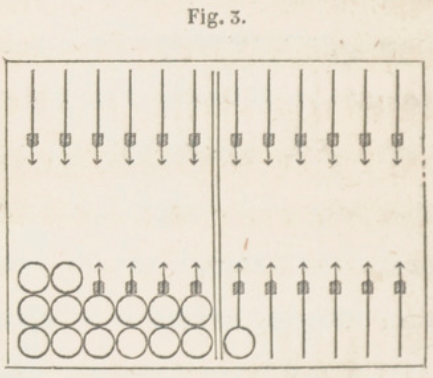
On remplit également lorsqu'on fait les six cases suivantes, les cases des flèches 6e, 7e 8e, 9e, 10e 11e (fig. 4)
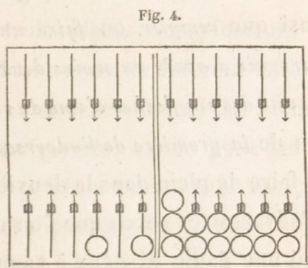
ou lorsqu'en passant au retour (V. nos 33, 41), on y fait ses six dernières cases, c'est-à-dire celles du talon et des cinq premières flèches (fig. 5).
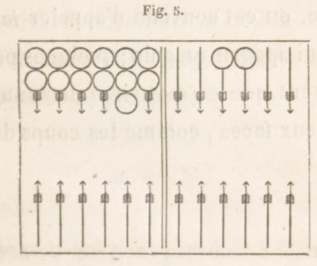
On voit ainsi que remplir ou faire un plein, c'est parvenir à avoir au moins deux dames sur chacune des six flèches d'une de vos deux tables ou de la première de l'adversaire. On ne peut faire de plein dans la deuxième table de l'adversaire, parce que l'on ne peut placer ni une dame ni deux à sa onzième flèche.
Chacun de ces trois pleins donne un même bénéfice à celui qui le fait. Au jeu de trictrac, on est convenu d'appeler jan tout coup qui apporte un gain ; quelques personnes disent que ce mot vient de Janus, qui avait deux faces, comme les coups du trictrac.
48. Petit jan. Grand jan. Jan de retour.
Ces trois pleins ont plusieurs choses semblables; mais ils différent en bien des points, et on leur a donné des noms différents. Le premier est le petit jan, parce qu'il est peu important, ne se fait pas toujours, et rapporte peu. Le deuxième est le grand jan, ainsi nommé à cause de sa grande importance, car c'est de lui, presque toujours, que dépend le gain ou la perte. Le troisième est le jan de retour : il tire son nom de l'endroit où on le fait. J'expliquerai les trois pleins séparément et dans l'ordre où ils se présentent.
49. Petit jan.
Le joueur qui peut parvenir à former les six cases dans la partie du tablier où est le talon, fait un petit jan.
50. Dames surnuméraires.
Chaque joueur a quinze dames; il n'en faut que douze pour les cases d'un plein : donc il y en a trois autres, qu'on appelle dames surnuméraires. On donne le même nom aux quatre ou cinq dames qui ne sont pas employées quand il reste à faire une demi-case, ou deux demi-cases, ou une case. On va même jusqu'à appeler dame surnuméraire celle qui est au-delà de la flèche ou des flèches à couvrir.
51. Pouvoir remplir.
A chaque coup que vous jouez, vous n'avancez que deux dames ou une. Ainsi pour remplir au coup suivant, il faut qu'il ne manque plus au plein que deux dames ou une, c'est-à-dire qu'il n'y ait plus à faire qu'une case, ou deux demi-cases, ou une demi-case.
52. Conditions pour remplir.
Il y en a trois, il faut 1° qu'il ne manque au plein que deux dames ou une ; 2° que vous ayez au moins deux dames surnuméraires qui ne soient point passées au-delà de la flèche ou des deux flèches à couvrir; 3° que votre coup porte deux de vos cinq dames surnuméraires, ou une de vos quatre, sur les flèches ou la flèche à couvrir, selon qu'il reste à faire une case, deux demi-cases, ou une demi-case. Il est possible qu'un plus grand nombre de conditions soient nécessaires pour les deux autres pleins.
53. Une case a faire.
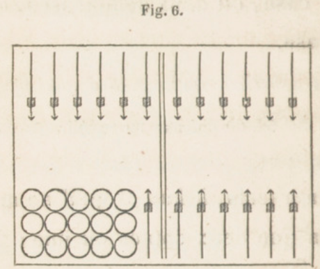
Avec la fig. 6 , cherchez les coups qui peuvent remplir. Pour n'en oublier aucun, combinez la première dame surnuméraire, celle qui est à gauche, avec les quatre autres, vous aurez 5-4, 5-3, 5-2, 5 1 ; ensuite la deuxième avec les trois autres, cela donne 4-3, 4-2, 4-1 ; la troisième avec les deux autres donne 3 2, 3-1 , et enfin 2-1 : ainsi dix coups remplissent. Pour voir si un coup amené remplit, il faut voir si chaque nombre porte une dame sur la flèche vide. Avec cette figure, aucun doublet ne remplit. Si les cinq dames surnuméraires sont, deux à la première flèche , deux à la troisième , une à la quatrième, les coups qui remplissent sont 4-2, 4-1 , 2-1 , 4-4, 2-2 : cinq coups.
54. Deux demi-cases à faire. Voir si un coup remplit.
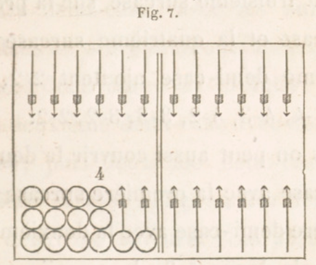
Ceci est nouveau et demande plus d'attention, plus de travail. Ici les dames surnuméraires sont des surcases. Couvrez la première demi case avec la première surcase , et la deuxième demi-case avec la deuxième surcase, cela donne 4-4; on peut aussi couvrir la deuxième demi-case avec la troisième surcase, avec la quatrième, et on a 4-3 , 4-2. Couvrez la première demi-case avec la deuxième surcase, et la dellxième demi-case avec la troisième surcase, puis avec la quatrième, vous avez 3-3, 3-2 ; la troisième surcase sur la première demi-case et la quatrième surcase sur la deuxième demi-case ajoutent 2-2. On a donc 4-4, 4-3, 4-2, 3-3, 3-2, 2-2.
Mais on peut aussi couvrir la deuxième demi-case avec la première surcase , et la première demi-case avec la deuxième surcase, cela donne 5-3; la première demi-case peut être couverte par la troisième surcase, par la quatrième , et on a 5-2, ,5-1. Couvrez la deuxième demi-case avec la deuxième surcase, et la première demi-case avec la troisième surcase, avec la quatrième, cela donne 4-2, 4-1 ; la troisième surcase sur la deuxième demi-case, et la quatrième surcase sur la première demi-case, 3-1. On a ainsi la série 5-3, 5-2, 5-1, 4-2, 4-1, 3-1. Il y a aussi la double surcase, qui ajoute 2-1.
Ces deux séries s'obtiennent en combinant les demi-cases avec les surcases, mais dans un ordre différent: c'est d'abord première demi-case avec première surcase, et deuxième demi-case avec deuxième surcase; puis deuxième demi-case avec première surcase. et première demi-case avec deuxième surcase. Pour abréger, je dirai : première avec première, deuxième avec deuxième, puis deuxième avec première, première avec deuxième. Pour distinguer cela, je dirai l'ordre naturel, l'ordre inverse. On peut faire plusieurs remarques sur ces deux séries. Dans la première, trois doublets; point dans l'autre, où les nombres diffèrent au moins de deux. Les sommes correspondantes des nombres sont égales 8, 7, 6, 6, 5, 4. Le coup 4-2 est dans les deux séries.
Pour voir si un coup remplit, il faut voir si, avec les deux nombres, on a deux surcases qui peuvent couvrir les deux demi-cases, en les prenant dans l'ordre naturel, puis dans l'ordre inverse, et une double surcase.
55. Une demi-case a faire.
Pour remplir, il suffit qu'une surcase soit portée sur la demi-case, par le plus petit nombre, ou le plus grand, ou leur somme. 6-2 remplit du petit, 5-1 du grand, 3 1 de la somme 4. Il y a tant de coups qui remplissent, qu'on ne les dira pas; 6-6, 6-3, 6-1, 5-5, ne remplissent pas.
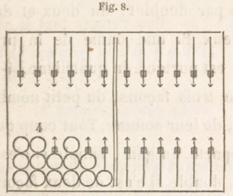
56. Remplir de deux façons, de trois façons.
Cela n'a lieu que lorsqu'il reste une dame à couvrir. Les coups 5-4, 4-1, remplissent de deux façons, du cinq et du quatre,
du quatre et du quatre et un, car ils portent l'une ou l'autre de deux des surcases sur la flèche à couvrir. Le 2-2 remplit de deux façons par doublet, du deux et du deux plus deux. Si une dame de la première flèche est portée à la quatrième, 4-1 remplit de trois façons, du petit nombre , du grand, de leur somme. Tout coup qui remplit apporte un gain, simple si c'est d'une façon , double si c'est de deux façons , triple de trois façons. Par doublet on ne peut remplir que d'une ou deux façons. Quand on a à choisir entre deux ou trois dames, on remplit de l'une, et on joue l'autre ou une des deux autres. On verra plus loin ce qui détermine dans ce choix.
57. Jouer d'abord la dame qui remplit.
Cela est très important; si l'on se trompe , si l'on joue le nombre qui ne remplit pas avec la dame qui aurait rempli ; on ne peut changer de place la dame jouée. (V. n° 46.) Aux six règles ou lois que vous connaissez il faut ajouter celle-ci : Vous êtes obligé de remplir, si c'est possible.
58. Punition pour règle oubliée.
Vous venez de voir une nouvelle loi ; il s'en présentera beaucoup d'autres. Je dois vous prévenir qu'il faut vous habituer à suivre les lois avec exactitude , car vous verrez plus tard qu'il y a une punition, une peine, pour le joueur qui y manque. Il ne faut pas vous effrayer de cela : presque aucun joueur ne fait d'oubli de règle.
59. Mettre dedans.
Il est aisé de comprendre qu'avec une demi-case à faire il est plus facile de remplir que si l'on a une case à faire, puisque dans le premier cas on remplit du petit nombre, ou du grand, ou de leur somme, au lien que dans l'autre cas il faut avoir deux nombres qui portent directement deux surcases sur la flèche a couvrir. Avec la fig. 6 vous amenez 6-4; vous jouez le six du talon à la sixième flèche , puis le quatre de la première flèche à la cinquième, ce que l'on appelle mettre dedans. Vous pouvez alors remplir du trois, du deux, de l'as, c'est-à-dire avec tous les coups qui contiennent un de ces nombres.
60. Conserver.
Si vous avez un plein, chaque coup que vous pouvez jouer en laissant deux dames sur chacune des six flèches vous vaut un gain; on dit que vous conservez. Il faut donc conserver aussi long-temps qu'il est possible. Vous conserverez bien des fois avec la fig. 3, si les coups n'ont pas de grands nombres.
61. Passer au retour.
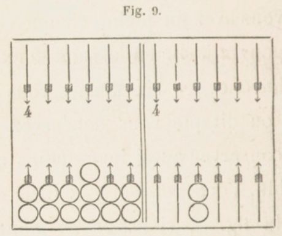
Avec la fig. 9 vous amenez 6-4 : comment le jouer? Peut-on conserver? Il faut jouer tout d'une de la neuvième flèche à la cinquième de l'adversaire , en vous reposant sur sa neuvième flèche ou sa onzième, en disant 6-4 ou 4-6. Si c'était 5-5, il n'y aurait qu'un passage ; si les passages étaient fermés, on jouerait de la première table ; si c'était 6-6, on prendrait son coin; si le coup était 3-3 ou 4-4 , on conserverait en prenant son coin. Avec un nombre quelconque et 1 ou 2, avec une somme des nombres égale à 7, on conserverait.
Pour que vous puissiez passer au retour il y a trois conditions ; une flèche vide pour vous reposer dans la deuxième table de l'adversaire ; une flèche vide dans sa première pour vous y arrêter; vous ne pouvez placer aucune dame dans une table où l'adversaire peut faire un plein.
62. Rompre.
Rompre, c'est ne pas conserver, c'est être obligé de jouer une des douze dames qui font le plein. On rompt le petit jan si l'on a 6-3, 5-4, 5-3. Avec 6-3 on prend son coin.
Vous portez deux dames du talon de l'adversaire à sa troisième flèche, et vous amenez 6-6 ; vous ne pouvez passer au retour ; vous rompez en prenant votre coin. Les deux dames de votre huitième flèche sont portées à la sixième, et vous amenez 6-6 ; vous ne pouvez prendre votre coin par puissance, car la règle du numéro 44, dernières lignes, est sans exception ; vous rompez, en prenant votre coin.
63. Refaire son petit jan.
Ayant rompu par 6-3, on remplit de nouveau, si l'on a 1-1 , 2-1, 2-2. Si vous portez les deux dames de la huitième flèche aux flèches cinquième et sixième, 6-6 fait rompre en prenant le coin, on a pour remplir les coups 1-1, 2-1, 2-2, 3-2, 4-2.
64. Remplir en passant.
Remplir en passant se dit quand vous n'avez plus à faire qu'une demi-case, si l'un des nombres fait remplir, et si l'autre fait rompre. Dans la fig. 9 on a rompu par 6-3 en prenant son coin ; on amène 6-2, on remplit par le 2 et l'on rompt par le 6.
CHAPITRE III. GRAND JAN.
65. Grand jan.
Lorsque vous ne pouvez faire le petit jan, ou que vous l'avez rompu, ou que vous ne voulez pas l'entreprendre, vous vous occupez de faire le grand jan, qui consiste à avoir au moins deux dames sur chacune des six flèches de votre deuxième table. Pour cela, vous vous empressez de faire, autant que possible, des cases dans votre deuxième table avec les dames jouées dans votre première.
66. Case du coin. Case du diable. Case de l'écolier.
Vous savez que la case du coin est la plus difficile et la plus importante; il faut donc vous occuper de la faire le plus tôt possible. L'expérience a appris que la case de la septième flèche est plus difficile à faire que les quatre autres, à cause de sa position par rapport au talon, ce qui ne permet pas d'y porter une dame directement, et ne laisse que rarement les six, les cinq et même les quatre pour la faire ; c'est cette difficulté qui l'a fait nommer case du diable ; on doit s'en occuper le plus tôt possible. On appelle case de l'écolier celle de la dixième flèche, à cause de l'empressement que des joueurs inexpérimentés montrent pour la faire, ce qui est quelquefois dangereux ; il est presque toujours avantageux de la faire la dernière.
67. Pouvoir remplir.
Pour pouvoir remplir au coup suivant, il faut les mêmes conditions qu'au n° 52 ; il faut de plus que les deux dames qui manquent au plein ne soient pas à plus de six flèches de la flèche ou des deux flèches à couvrir.
68. Une case a faire.
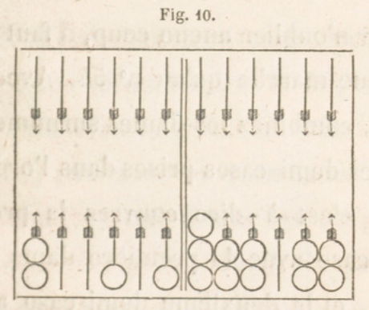
Soit la figure ci-jointe; les dames du talon ne peuvent servir à remplir au coup suivant ; on ne remplit que par 6-4, 6-3, 4-3. Si les deux dames du talon sont portées aux flèches quatrième et septième, on a les coups 6-5, 6-4, 6-3, 6-2, 5-4, 5-3, 5-2, 4-3, 4-2,3-2. On a la règle: Avec cinq cases faites, on remplit si les deux nombres du coup portent deux dames surnuméraires sur la flèche vide.
69. Deux demi-cases à faire.
Pour n'oublier aucun coup, il faut suivre la même marche qu'au n° 54. Avec cette figure, combinez les dames surnuméraires avec les demi-cases prises dans l'ordre naturel, c'est-à-dire couvrez la première demi-case avec la première dame surnu-maire, et la deuxième demi-case avec la deuxième dame surnuméraire; puis avec la troisième dame surnuméraire, avec la quatrième, avec la cinquième, ce qui donne les coups 5 - 5, 5-4, 5 - 3, 5-2.
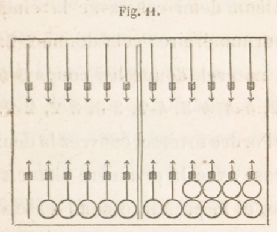
Couvrez ensuite la première demi-éase avec la deuxième dame surnuméraire, et la deuxième demi-case avec la troisième dame surnuméraire; puis avec la quatrième, avec la cinquième, ce qui donne les coups 4-4, 4-3, 4 2. On peut couvrir la première demi - case avec la troisième dame surnuméraire, et la deuxième demi case avec la quatrième dame surnuméraire, puis avec la cinquième : ce qui donne les coups 3-3, 3-2. Enfin couvrez la première demi-case avec la quatrième dame surnuméraire, et la deuxième demi-case avec la cinquième dame surnuméraire : cela donne 2-2. Ainsi l'ordre naturel donne les coups 5 -5, 5-4, 5-3, 5-2, 4-4, 4-3, 4-2, 3-3, 3-2, 2-2.
Pour l'ordre inverse, couvrez la deuxième demi-case avec la première dame surnuméraire, et la première demi-case avec la deuxième dame surnuméraire , puis avec la troisième, avec la quatrième, avec la cinquième : ce qui donne les coups 6-4, 6-3, 6-2, 6-1. Couvrez ensuite la deuxième demi-case avec la deuxième dame surnuméraire, et la première demi-case avec la troisième dame surnuméraire, puis avec la quatrième , avec la cinquième : cela donne 5-3, 5-2, 5-1. On peut couvrir la deuxième demi-case avec la troisième dame surnuméraire, et la première demi-case avec la quatrième dame surnuméraire, puis avec la cinquième : cela donne 4-2, 4-1. Enfin couvrez la deuxième demi-case avec la quatrième dame surnuméraire, et la première demi-case avec la cinquième dame surnuméraire, 3-1. Ainsi l'ordre inverse donne les coups, 6-4, 6-3, 6-2, 6-1, 5-3, 5-2, 5-1, 4-2, 4-1, 3-1. On peut remarquer que les deux-séries ont trois coups communs, 5-3, 5-2, 4-2.
70. Demi -cases non contiguës.
Dans la figure précédente, portez une dame de la première flèche à la cinquième, et une de la huitième à la septième; placez vos dames sur votre trictrac. L'ordre naturel donne 5-4, 4-4, 4-3, 4-3, 3-3, 3-2 ; l'ordre inverse donne 6-3, 6-2, 6-1, 5-2, 5-1, 4-1. La double dame surnuméraire de la cinquième flèche ajoute 3-1 ; 4-3 se trouve deux fois.
71. Essai pour remplir.
Comment voir si un coup couvre deux demi-cases? Prenons la figure du numéro précédent, et supposons que les deux séries de coups ne sont pas connues. Le coup 6-2 remplit-il? Essayez l'ordre naturel ; la première demi-case n'est couverte par aucune dame avec le nombre six. Essayez l'ordre inverse; la deuxième demi-case est couverte par le six de la première flèche, et la première demi-case l'est par le deux de la quatrième flèche ; donc 6-2 remplit.
72. Demi-case à faire.
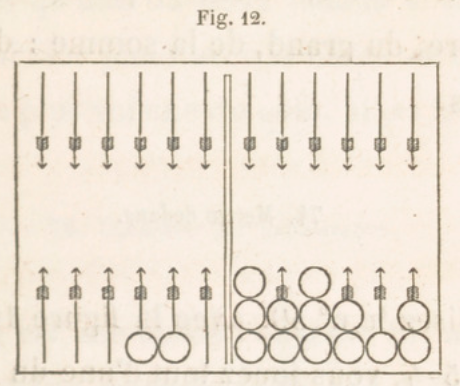
Vous remplissez si l'un des deux nombres ou leur somme est six, ou quatre, ou deux, ou bien si la somme des deux nombres est sept. Avec 3-2, on remplit du deux; 2-1 remplit du deux, le plus grand; 3-1 remplit par la somme.
73. Remplir de deux façons, de trois façons.
Vous remplissez de deux façons par 6.4, 6-1, 5-2, qui donnent à choisir entre deux dames qui peuvent couvrir la dixième flèche. Avec 4-2, vous remplissez du pelit nombre, du grand, de la somme : de trois façons.
74. Mettre dedans.
Relisez le n°59. Avec la figure 10 et le coup 5-4, vous jouez tout d'une du talon à la neuvième flèche; vous remplissez ensuite par tous les coups qui contiennent un six, un quatre, ou un trois, ou qui ont pour somme un de ces nombres; la somme neuf remplit aussi.
75. Conserver (V. n°60).
Le grand jan se conserve bien plus longtemps que le petit jan. Avec la figure 4, vous pouvez conserver plusieurs fois, si les nombres ne sont pas grands. Comme on ne joue qu'une ou deux dames à chaque coup, il faut jouer avec la dame surnuméraire la plus voisine du coin, si on le peut.
76. Conserver par impuissance.
Ceci est une chose nouvelle. Si, avec la fig. 4, vous amenez deux fois 6-6, vous jouez le premier coup de la troisième flèche à la neuvième, et de la cinquième à la onzième. Quant au deuxième coup, si l'adversaire a son grand jan, vous ne pouvez jouer aucun 6, aucun nombre de ce coup ; cependant les cases de votre grand jan restent entières: donc vous conservez sans rien jouer. On appelle cela conserver par impuissance , par l'impuissance de rien jouer. Si le premier coup était 6-5, il laisserait un 6 pour jouer ; mais l'autre 6 du deuxième coup ne pourrait se jouer.
Ainsi , conserver par impuissance le grand jan, c'est ne pas rompre et avoir un ou deux nombres de son coup que l'on ne peut jouer. On ne conserve ainsi que quand on a passé toutes ses dames dans sa deuxième table , et qu'il vient des 6. On gagne autant que si l'on jouait les deux nombres; l'adversaire gagne quelque chose pour chaque nombre que vous ne pouvez jouer.
77. Conserver en passant au retour (V. n°61).
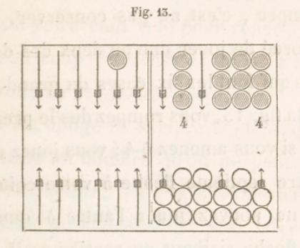
Vous avez eu des coups très favorables, l'adversaire en a eu de très contraires, en sorte que les deux jeux sont ceux de la fig. 13. Vous pouvez placer des dames dans sa deuxième table, où il ne peut plus faire de plein (V. n° 61 , 2e alinéa). Si vous amenez 5-3, votre dame surnuméraire de la dixième flèche va à sa cinquième; avec 5-2, à sa sixième. Avec 5-4, votre dame surnuméraire de votre dixième flèche serait portée sur sa quatrième , où il a une dame et, où vous ne pouvez aller ; pour conserver, il faut jouer de votre dixième à sa huitième, et de votre septième à votre onzième.
78. Rompre (V. a, 62).
Rompre , c'est ne pas conserver, c'est être forcé de jouer une ou deux des douze dames qui font les six cases du grand jan. Avec la fig. 13, vous rompez dès le premier coup, si vous amenez 4-4; vous jouez un 4 de votre septième flèche à votre coin, et vous ne pouvez jouer l'autre 4 que de votre flèche sixième ou septième; il vaut mieux de votre sixième, pour défendre le passage à l'adversaire le plus possible. Si vous amenez 6-6, vous êtes forcé de le jouer avec une des deux dames de votre neuvième flèche, qui se repose sur la huitième de l'adversaire et va à sa deuxième. Si l'adversaire n'avait de vide dans sa deuxième table que la sixième flèche, votre 6-6 vous forcerait à passer les deux dames de votre coin à cette sixième flèche, ce qui faciliterait bien le passage des dames de l'adversaire dans votre première table , en prenant votre coin vide pour repos , lorsque son coup contiendrait un 6, à moins que vous ne reprissiez votre coin.
On est obligé de rompre le plein, quand on amène un nombre qu'on ne peut jouer dans ses tables, s'il y a passage dans la deuxième de l'adversaire, pour aller dans sa première. On doit alors jouer la dame d'une de ses cases, qui va directement à ce passage en comptant le nombre de l'un des dés, et on la met dans sa première table à la flèche où elle va, en comptant les nombres des deux dés ensemble : bien entendu que cette flèche est vide , car si elle ne l'était pas, on ne romprait pas.
Lorsqu'on est obligé de rompre par 5-4, et que l'adversaire est également près de rompre, il est quelquefois plus avantageux de découvrir deux dames que de livrer passage; par ce moyen, s'il amène 6-5, il est obligé de rompre.
79. Refaire son plein (V. n° 63).
Supposez que, dans la fig.13, vous portiez deux dames de la septième tlèche de l'adversaire à sa hùitième. Si vous amenez 6-2, vous êtes forcé de tout jouer (V. n° 34), et il n'y a qu'une seule manière de le faire, c'est de jouer tout d'une de votre neuvième flèche à la sixième de l'adversaire, en vous reposant sur votre coin. Vous rompez ainsi votre plein; mais si, ensuite, vous amenez 1-1, vous remplissez de deux façons : la meilleure manière de jouer est de remplir de la dame surnuméraire de votre huitième flèche, et de porter celle qui est à la sixième de l'adversaire à sa cinquième. Dans ce moment, vos trois dames surnuméraires sont à votre septième flèche, à votre dixième et à la cinquième de l'adversaire. Si vous amenez 6-3, vous êtes forcé de rompre de nouveau en jouant de votre huitième flèche à la sixième de l'adversaire. Si, au coup suivant, vous amenez 4-1, vous remplissez avec la dame surnuméraire de la septième flèche , et vous jouez le 4 de la cinquième flèche de l'adversaire à sa première. Vous faites donc votre grand jan pour la troisième fois.
Vous voyez maintenant que je vous ai fait jouer 1 -1 en laissant la dame surnuméraire de votre septième flèche , pour qu'elle servît à remplir une troisième fois. Donc , quand vous êtes obligé de rompre et que vous pouvez le faire par plus d'un endroit, vous devez avoir l'attention de choisir celui qui donne le plus d'avantage pour l'elnplir de nouveau par la situation des dames qui restent. On doit prévoir l'obligation de rompre son grand jan , et se réserver au moins une dame en arrière de la flèche par laquelle on rompra, pour remplir de nouveau.
80. Reprendre son coin.
Si, avec les deux jeux de la fig. 13, l'adversaire amène 1 -1, il le joue de sa septième flèche à sa huitième. Si vous avez 6-6, vous ne pouvez le jouer qu'en passant votre coin. S'il vous vient ensuite un des coups It-3 , 4-1 , 3-1 , vous reprenez votre coin et remplissez de nouveau.
81. Remplir en jouant un seul nombre.
Lorsque, des deux nombres amenés, l'un achève le plein et l'autre est impossible à jouer, on remplit néanmoins, et l'on gagne comme à l'ordinaire. Supposons que dans la ug. 13 l'adversaire ait son plein fait, que dans votre jeu une des dames de la. neuvième flèche soit portée à la sixième , les dames ainsi placées sur votre trictrac toujours ouvert (V. n° 39), vous amenez 6-3, 6-2, 6-1 : vous ne pouvez jouer le 6, et vous remplissez du 3, du 2, de l'as.
82. Remplir en passant (V. n° 64).
Remplir en passant se dit lorsque, n'ayant plus qu'une demi-case à faire pour achever le plein, un des deux nombres amenés remplit et l'autre fait rompre. On suppose que dans la figure 13 une dame de votre neuvième flèche est portée à la dixième ou à la onzième, et que vous amenez 4-2 : le 2 remplit et le 4 fait rompre.
83. Relever ses dames.
Si l'on a rompu, si l'on fait Je grands nombres qui portent les dames au delà du coin , et s'il n'y a point de passage dans le jeu de l'adversaire, on ne peut jouer, et l'adversaire gagne quelque chose pour chaque nombre qu'on ne joue pas. On peut même être forcé de relever toutes ses dames sur son coin ou sur ses dernières flèches. Si des deux nombres amenés on n'en peut jouer qu'un, on est forcé de jouer le plus grand , quand cela se peut.
84. Nombre à jouer. Nombre pour jouer.
Un nombre à jouer, que l'on est forcé de jouer avec une de ses dames (V. n° 34), est l'un des deux nombres de dés au coup dont il est question. Il exprime combien il y a de points sur la face supérieure d'un dé , et n'est jamais plus grand que 6. Il indique de combien de flèches doit avancer une dame. Il n'y a jamais que deux nombres à jouer à chaque coup; si on les réunit, leur somme va de deux à douze.
Un nombre pour jouer, qui servira à jouer le coup de dés que l'on a amené ou que l'on amènera, exprime le plus grand nombre de flèches dont peut avancer une dame qui est à une place déterminée et connue. Il peut aller de zéro à dix dans chaque jeu. Si les deux grands jans sont faits, le nombre pour jouer d'une troisième dame sur le coin sera zéro; celui d'une dame au talon sera dix si le coin n'est pas pris, onze s'il est pris. Il peut y avoir un, deux, trois, quatre nombres pour jouer.
Les nombres pour jouer servent à battre le coin, avec les dames entrées dans votre deuxième table ; ils servent aussi pour remplir, pour conserver et pour autre chose. Pour battre le coin, il faut que, dans les nombres pour jouer, il s'en trouve deux égaux aux deux nombres à jouer. Au numéro 45, ayant des dames aux flèches sixième et huitième , cela vous donne pour aller au coin de l'adversaire les nombres 6, 4, qui se trouvent être les nombres amenés par les dés. Au numéro 47, la figure 4 donne, pour conserver, les nombres 8, 6, 5 ; le coup 5 - 4 donne les nombres à jouer 5, 4.
85. Revirade.
Faire une revirade , c'est défaire une case pour en faire une autre, ou pour couvrir une demi-case. Supposons que vous ayez une dame à votre cinquième flèche , deux à votre sixième, et une à votre septième, et que l'adversaire ait fait les cases des flèches première, quatrième et dixième : si$si vous amenez 5-1 ,vous abattez le cinq et vous jouez l'as de la sixième flèche à la septième, parce que cela vous fait là case du diable (V. n° 66).
Vous avez votre plein, moins le coin que vous n'avez pu prendre ; vous avez une surcase à votre sixième flèche, et les autres dames surnuméraires sont dans votre première table: vous amenez 5-5, ou 5-4, 5-3, 5-2, 5-1 ; vous ne devez pas manquer de faire la revirade pour prendre votre coin.
86. Double revirade.
Elle consiste à défaire deux cases pour en faire une plus avancée; elle est rare, et n'a guère lieu qu'avec les cases des flèches sixième et septième, lorsque ayant ses cinq dames surnuméraires sur plusieurs flèches de sa première table, et sa dixième flèche vide, on a l'espoir de remplir au premier coup ou au deuxième.
Il est une autre espèce de double revirade, qui consiste à pousser une case à une flèche vide plus éloignée. C'est presque toujours une faute que font les joueurs inexpérimentés , croyant avancer ainsi leur jeu. Mais ils le retardent, en resserrent l'étendue, et s'exposent par conséquent à l'influence funeste des grands nombres plusieurs fois répétés.
87. Pousser plusieurs cases.
Lorsque plusieurs cases se touchent et qu'on fait un doublet qui transporte la première de ces cases après la dernière, en sorte qu'elles se touchent encore, au lieu d'enlever avec la main les deux dames de cette première case pour les porter après les autres, on peut pousser toutes les cases à la fois l'espace d'une flèche.
88. Enfilade.
Si les coups vous sont très favorables, et s'ils sont très contraires à l'adversaire, il est possible qu'il soit obligé de rompre tout de suite, d'ouvrir son jeu et de vous laisser libre de passer au retour. Vous en profitez bientôt en conservant et passant vos dames surnuméraires dans sa deuxième table ou sa première. Il ne peut alors passer chez vous; il sera peut-être réduit à porter toutes ses dames dans son coin. C'est ce qu'on appelle être enfilé, subir l'enfilade. Il arrive quelquefois qu'un joueur est enfilé, sans que ce soit sa faute, quand les coups lui sont totalement contraires, et qu'il ne peut plus faire son plein : ce fâcheux événement est l'effet du hasard, mais les joueurs prudents l'évitent presque toujours.
CHAPITRE IV. RETOUR. — PASSER AU RETOUR. — JAN DE RETOUR. - SORTIR SES DAMES DES FLÈCHES.
§ 1. RETOUR. - PASSER AU RETOUR. - JAN DE RETOUR.
89. Importance et difficulté du retour.
Ce que j'ai à vous dire sur ces trois parties est d'une grande importance; cela sera fort long, et exigera de l'attention et de la patience, parce qu'il y a beaucoup de cas particuliers qui peuvent se présenter dans le grand nombre de parties que l'on joue. Les détails sur le retour s'oublient plus facilement que ceux du jeu ordinaire (voyez n° 33 ), parce qu'ils arrivent moins souvent, qu'ils sont plus nombreux et plus difficiles. Pour qu'il n'y ait jamais de contestation, il faut en apprendre bien les lois, voir comment on lève les dames.
90. Retour.
Le retour est pour vous la moitié du tablier qui est du côté de l'adversaire (V. n° 33). Quand vous avez rompu votre grand jan, et que vous ne pouvez plus le refaire, (V. n° 79), vous vous occupez de passer au retour. Vous passez vos dames dans la deuxième table de l'adversaire, puis dans la première. Mais, pour passer, il faut trouver des passages ouverts, c'est-à-dire que la flèche sur laquelle vous vous reposez et celle où vous arrêtez n'aient aucune dame de l'adversaire (V. n"' 42, 61). Avec la fig. 13, 6-5 fait passer de la dixième flèche à la deuxième de l'adversaire ; pour 5-4, on joue le cinq de la dixième flèche à la huitième de l'adversaire, et de la septième au coin. Dans ce, cas, le passage est ouvert ; dans le cas contraire, le passage est fermé.
91. Demi-cases d'abord.
Toutes les cases sont égales pour la première table de l'adversaire ; ainsi on peut y faire chacune à deux fois. Lorsque l'adversaire n'y a plus de dames, vous devez y étendre les vôtres, en commençant par y faire des demi-cases, et d'abord les plus éloignées du talon de l'adversaire, afin d'avoir ensuite de plus grands nombres pour jouer, et parce que vous caserez et remplirez plus facilement.
92. Cases éloignées du talon.
Pour la raison que je viens de donner, on doit, quand on le peut, commencer par faire les cases les plus éloignées du talon de l'adversaire. Quand on commence par les dernières, on s'expose à ne pas remplir, à cause des dames qui se trouvent passées avant qu'on ait pu remplir.
93. Ouvrir ou fermer le passage.
Si votre adversaire est fort avancé, s'il a rompu son grand jan, fermez les passages et ne relevez qu'une dame à vos flèches sixième et septième. S'il a plus de dames passées dans votre première table que vous dans la sienne, tâchez de lui interdire longtemps le passage, pour le forcer à perdre des dames dans votre première table.
Si, au contraire, vous êtes plus avancé que lui, relevez et passez promptement, sans vous occuper de lui fermer un passage : vous perdriez un temps précieux que vous devez employer à bâter le plein. Si l'adversaire a son grand jan et deux ou trois dames surnuméraires sur son coin et que vous ayez le même plein, jouez les coups 4-4, 4-3, 4-2, 4-1, 3-3, 3-2, 3-1, 2-2, 2-1, 1-1, en levant les deux dames de la septième flèche, pour forcer l'adversaire à rompre, s'il amène un six, car il ne pourra alors conserver par impuissance.
94. Trois dernières cases.
Quand le jeu de l'adversaire est bien avancé pour passer au retour, il faut tâcher de conserver le coin et les cases des flèches dixième et neuvième, pour gêner le passage et nuire au jeu de l'adversaire.
95. Dames à la neuvième flèche.
Si l'adversaire a un jeu très long, il ne faut pas lui tenir les passages fermés aux flèches septième et huitième; il faut relever, autant que les coups le permettent, et empiler sur la neuvième flèche, parce que, s'il vient des deux, on peut les jouer sans rompre les trois cases qui sont la dernière ressource.
96. Sortir du coin.
Quand on est près de remplir, et surtout quand on n'a plus que deux ou trois cases dans sa deuxième table, on doit sortir du coin. Sans celte attention, on sera obligé de passer des dames au delà des flèches à couvrir, si l'on amène un ou deux as, et l'on manquera le jan de retour. On agit autrement si l'on a encore plusieurs cases à faire, et si l'adversaire a bien des cases dans sa deuxième table, parce que le coin serait battu presque à tous les coups. Lorsque l'on ne peut plus conserver les trois dernières cases, et qu'il faut en sortir une, on doit préférer sortir le coin, parce qu'il est toujours, même étant vide, un obstacle au passage de celui de l'adversaire, puisqu'il lui oppose les coups où il y a un as. Quand on se dispose à passer son coin, il faut éviter d'y mettre des surcases, qui en empêcheraient la sortie.
97. Jan de retour.
Vous avez vu que le grand jan, semblable au petit jan, en diffère en dix articles. Le troisième plein donne lieu à bien plus de choses nouvelles ; on vient d'en donner huit, et on en fera connaître beaucoup d'autres.
98. Pouvoir remplir.
Pour pouvoir remplir au coup suivant, il faut les quatre mêmes conditions qu'au * n° 67; et en outre, s'il reste une demi-case à faire, il faut qu'une dame surnuméraire ne soit pas à plus de douze flèches de la dame à couvrir, puisque la plus forte somme des nombres est douze.
99. Une case à faire (V. n˚53, 68).
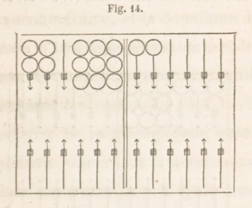
Pour avoir tous les coups qui remplissent, il faut combiner deux à deux les dames surnuméraires :on a 5-4, 5-3, 5-2, 5-1, 4-3, 4-2, 4-1, 3-2, 3-1, 2-1. Si cette série n'est pas écrite, on peut voir si un coup remplit. Soit, par exemple, 4-3 : on voit qu'à compter quatre à partir de la flèche vide, on arrive à la sixième, qui a une dame ; de même trois tombe sur la cinquième flèche; donc 4-3 remplit.
100. Deux demi-cases à faire (V. n° 54, 69).
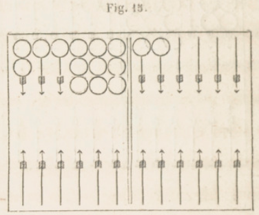
Pour n'oublier aucun coup, combinez les dames surnuméraires avec les deux demi-cases prises dans Tordre naturel, c'est-à-dire couvrez la première demi-case avec la première dame surnuméraire, et la deuxième demi - case avec la deuxième dame surnuméraire, puis avec la troisième dame surnuméraire, avec la quatrième, avec la cinquième : ce qui donne les coups 5-5, 5-4, 5-3, 5-2. Couvrez ensuite la première demi-case avec la deuxième dame surnuméraire, et la deuxième demi-case avec la troisième dame surnuméraire, puis avec la quatrième, avec la cinquième : ce qui donne les coups 4-4, 4-3, 4-2. On peut couvrir la première demi-case avec la troisième dame surnuméraire, et la deuxième demi-case avec la quatrième da- • me surnuméraire, puis avec la cinquième: ce qui donne les coups 3-3, 3-2. Enfin couvrez la première demi-case avec la quatrième dame surnuméraire, et la deuxième demi-case avec la cinquième dame surnuméraire: cela donne 2-2. Ainsi l'ordre naturel donne les coups 5-5, 5-4, 5-3, 5-2, 4-4, 4-3, 4-2, 3-3, 3-2, 2-2.
Pour l'ordre inverse, couvrez la deuxième demi-case avec la première dame surnuméraire, et la première demi-case avec la deuxième dame surnuméraire, puis avec la troisième, avec la quatrième, avec la cinquième : ce qui donne les coups 6-4, 6-3, 6-2, 6-1. Couvrez ensuite la deuxième demi-case avec la deuxième dame surnulllérajre, et la première demi-case avec la troisième dame surnuméraire , puis avec la quatrième, avec la cinquième : cela donne 5-3, 5-2, 5-1. On peut couvrir la deuxième demi - case avec la troisième dame surnuméraire, et la première demi-case avec la quatrième dame surnuméraire, puis avec la cinquième : cela donne 4-2, 4-1. Enfin couvrez la deuxième demi-case avec la quatrième dame surnuméraire, et la première demi-case avec la cinquième dame surnuméraire, 3-1. Ainsi l'ordre inverse donne les coups, 6-4, 6-3, 6-2, 6-1, 5-3, 5-2, 5-1, 4-2, 4-1, 3-1. On peut remarquer que les deux séries ont trois coups communs, 5-3, 5-2, 4-2.
101. Demi-cases non contiguës.
Portez une dame du talon à la première flèche dans la figure 15. L'ordre naturel donne 6-5, 5-5, 5-4, 5-3, 5-4, 4-4, 4-3, 4-3, 3-3; l'ordre inverse, 6-3, 6-2, 6-1, 5-2, 5-1, 4-1. Les coups 5-4, 4-3, se trouvent deux fois.
102. Essai pour remplir (V. n° 71).
Les deux séries étant supposées inconnues, essayez 6-2 ; dans l'ordre naturel, aucun six ne couvre la première demi-case; dans l'ordre inverse, six couvre la deuxième demi-case, et deux couvre la première avec la dame surnuméraire de la quatrième flèche.
103. Demi-case à faire.
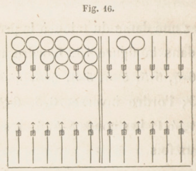
Vous remplissez si l'un des deux llombres ou leur somme est six, ou quatre, ou deux, ou bien si la somme desdeux nombres est sept. Avec 3-2, on remplit du deux; 2-1 remplit du deux, le plus grand; 3-1 remplit par la somme.
104. Remplir de deux façons, de trois façons (V. n° 73).
Vous remplissez de deux façons par 6-4, 6-1, 5-2, qui donnent à choisir entre deux dames qui peuvent couvrir la première flèche. Avec 4-2, vous remplissez du petit nombre, du grand, de la somme, de trois façons.
Si les deux dames des flèches septième et huitième sont portées au coin, elles ne peuvent servir à remplir au coup suivant, car les deux dames ne peuvent sortir séparement.
105. Mettre dedans (V. n° 74).
Relisez le numéro 59. Avec la fig. 14 et le coup 6-3, vous mettez le trois sur la deuxième flèche, et le six va de la sixième flèche au talon ; vous remplissez ensuite par tous les coups qui ont un cinq, un deux ou un as.
106. Conserver (V. noa 60, 75).
Avec la fig. 5, vous pouvez conserver plusieurs fois, si les nombres ne sont pas grands. Comme on ne joue qu'une ou deux dames à chaque coup, il faut jouer avec la dame surnuméraire la plus voisine du talon, si on le peut.
107. Conserver par impuissance (V. n° 76).
On conserve ainsi dans quatre cas. Si l'on a une dame surnuméraire à la cinquième flèche de l'adversaire, une case à sa huitième flèche, l'adversaire en ayant une à sa neuvième, et si l'on amène G-6, on ne peut jouer de sa huitième flèche, à cause des dames qu'a l'adversaire à sa neuvième ; dans la première table de l'adversaire, on ne peut jouer que le cinq. Si vous portez votre case à votre coin, 6-1 ne vous permet de jouer que l'as, même si l'adversaire n'a plus de dames dans son jeu. On a son coin et la troisième dame surnuméraire à la quatrième flèche, l'adversaire a une damè à sa neuvième flèche; on amène 6-3, on ne peut passer les dames de son coin à cause de la dame de l'adversaire ; on joue le trois de la quatrième flèche à la première. Le quatrième cas est semblable au premier : l'adversaire a des cases à ses flèches neuvième et dixième; vous ne pouvez jouer ni 6-6, ni 6-5 ; vous jouez le cinq de la cinquième flèche de l'adversaire.
108. Privilége de la bande.
Une loi fort singulière est celle-ci : Lorsque toutes les dames sont entrées dans la première table de l'adversaire, on compte pour une flèche la bande AD, fig. 1, contiguë aux deux talons. Cette loi a des applications très importantes.
109. Remplir par ce privilège.
On a son jan de retour moins une dame à la deuxième flèche ; les dames surnuméraires sont au talon et aux flèches première, quatrième et sixième ; on amène 5-4 ; on remplit avec le quatre; puis, tout étant entré, on joue sur la bande le cinq de la quatrième flèche.
110. Conserver par le privilége de la bande.
La bande étant comptée pour une flèche, si l'on a son jan de retour, les trois dames surnuméraires étant placées, une au talon et deux à la cinquième flèche de l'adversaire, si l'on amène 6-6 ou 6-1, on conserve en jouant sur la bande les deux dames de la cinquième flèche, ou une de la cinquième flèche et une du talon. Si vous n'avez plus qu'une dame dans la deuxième table de l'adversaire, et si vous amenez un nombre par lequel vous pouvez entrer cette dame, vous avez le droit, après l'avoir entrée, de jouer l'autre nombre sur la bande pour conserver; on a 6-6, et les trois dames surnuméraires aux flèches première, cinquième, sixième; on joue le premier 6 de la sixième flèche au talon, puis le deuxième 6 de la cinquième à la bande.
Au jan de retour, il manque une dame à la première flèche ; deux dames surnuméraires sont à la cinquième flèche , les deux autres aux flèches troisième, sixième; on amène 6-5 ; on joue le cinq pour remplir, puis le six de la cinquième flèche.
111. Rompre (V. n°62, 78).
Avec le jeu de la fig. 5, vous romprez au deuxième coup, si vous avez deux sonnez ou deux 6-5.
112. Refaire son jan de retour (V. n° 63, 79).
Votre trictrac ouvert, vous faites le jan de retour, et placez vos trois dames surnuméraires sur votre coin; deux dames de l'adversaire sont à sa dixième flèche.
Vous avez 1-1, vous rompez de la cinquième flèche, 5-2 vous fait remplir une deuxième fois. Vous rompez par 3-1, de la cinquième flèche ; 4-3 fait passer le coin, et 2-1 fait remplir une troisième fois.
113. Remplir en jouant un seul nombre (V. n°81).
Vous avez votre jan de retour moins une dame à la deuxième flèche, votre coin, une dame surnuméraire au talon, l'autre à la troisième flèche. Vous amenez 6-1, vous remplissez de ras, et ne jouez point le six.
114. Remplir en passant (V. n°64, 82).
Vous avez votre plein moins une dame à votre quatrième flèche ; vos dames surnuméraires sont : deux au talon, les autres aux flèches première et septième. Vous amenez 6-3, vous remplissez du trois et vous rompez du six.
§ 2. SORTIR SES DAMES DES FLÈCHES.
115. Loi de la sortie. Toutes les dames dans la première table.
Pour jouir de la faculté de mettre ses dames hors des flèches, il faut qu'elles soient toutes entrées dans la première table de l'adversaire. Il n'est pas nécessaire qu'elles y soient toutes quand on jette les dés; si la dernière entre par un nombre, avec l'autre nombre on peut sortir une dame. On peut sortir les dames qui aboutissent à la bande par les nombres amenés.
Les dames qui vont sur la bande ou hors des flèches sont mises en une ou deux piles dans votre deuxième table près le milieu de la bande B C.
116. Noms des nombres.
Pour mieux entendre les autres lois de la sortie, il faut employer pour les nombres amenés trois dénominations : nombres sortants, nombres défaillants, nombres excédants. Il peut s'en trouver de deux espèces. Les premiers sont ceux dont le nombre aboutit à la bande par l'une des dames qui peut sortir. Les seconds sont ceux dont le nombre est trop petit pour aboutir à la bande par aucune dame ; on joue la plus éloignée du talon. Les derniers sont trop grands pour aboutir à la bande ; ils vont au delà et sortent les dames.
117. Une dame pour une autre.
Celui qui, ayant à jouer un nombre sortant, se trompe, et touche une dame qui, par ce nombre , peut être jouée dans le tablier, fait faute et est obligé de jouer la dame touchée (V. n° 46), et non celle par laquelle il aurait pu sortir.
118. Avantages du premier sortant.
Celui qui parvient à sortir le premier toutes ses dames gagne quelque chose pour le dernier coup; il marque ce gain avant de toucher ses dames. Il a la primauté pour le relevé, et joue ainsi deux coups de suite. Il oblige l'adversaire à lever aussi ses dames , quand même il aurait encore son plein et la certitude de conserver bien des fois. Les deux joueurs gardent le gain qu'ils ont fait.
On verra plus loin que le gain pour la sortie est plus grand si le dernier coup est un doublet. Il est d'usage que celui qui joue le dernier coup, devant jouer le premier quand on recommencera, dise en jetant les dés : Je joue pour tout, afin que l'on connaisse son gain pour la sortie et le coup qu'il aura à jouer.
119. Sortie de convention.
Il arrive presque toujours que la position des jeux ne laisse aucune incertitude sur la priorité de la sortie; on convient ordinairement, pour supprimer un grand nombre de coups inutiles, que celui à qui cette priorité est acquise incontestablement recommencera tout de, suite.
120. Changement de dames.
Quand, un joueur ayant tout sorti, on recommence à jouer, il est d'usage que chaque joueur garde les dames qu'il a de son côté, et on change ainsi à chaque relevé.
121. Réflexions sur ce qu'on a vu.
Avant d'aller plus loin, il est bien utile de réfléchir sur ce qui précède, de voir ce qu'il y a de semblable et de différent dans les trois pleins. Il est facile de remarquer, dans les trois cas, la similitude pour remplir quand il manque une case, deux demi-cases, une demi-case d'une façon, de deux ou trois façons, ainsi que pour conserver et pour rompre. Il n'y a de difficile que quand il manque deux demi-cases à un plein, et cette difficulté disparaît en étudiant bien cela. Vous ne devez voir quelque chose de nouveau que quand vous savez parfaitement ce que vous avez appris, afin que vous n'ayez jamais deux choses à étudier à la fois. Jusqu'à présent, j'ai suivi l'ordre le plus naturel; je continuerai la même marche.
CHAPITRE V. JANS.
- Jans.
On a vu (V. n° 47, 2eme alinéa) qu'on nomme jan tout coup qui apporte un gain à l'un des joueurs ; néanmoins , on donne spécialement le nom de jan aux trois pleins que l'on fait dans ses deux tables et dans la première table de l'adversaire. Il y a cinq autres jans moins importants et plus rares, mais qu'il est nécessaire de connaître, car ils apportent un bénéfice. Je vais les expliquer.
123. Jan de trois coups. Jan de six dames.
Il se fait lorsqu'en trois coups, en commençant la partie, on abat six dames de suite, cinq dans la première table et une dans la deuxième. On n'est point obligé de jouer le troisième coup avec deux autres dames; il suffit qu'il ait deux nombres convenables pour abattre les deux autres dames. Avec deux des quatre dames abattues, on fait la case la plus avantageuse dans la deuxième table, après avoir marqué son gain. Si, après avoir eu 6-1, 3-2, on a 5-4, on fait case à la septième flèche., Le jan de trois coups ne doit être cherché que quand on a de petits nombres; dans le cas contraire, il vaut mieux jouer le deuxième coup dans sa deuxième table, pour arriver à prendre son coin. Si l'on a les coups 3-2, 5-4, on joue deux dames aux flèches sixième et huitième.
124. Jan de deux dames. Jan de deux coins. Battre les deux coins.
C'est lorsqu'on n'a que deux dames abattues, l'adversaire n'ayant pas son coin, et que les nombres portent une des dames à son coin et l'autre au coin de l'adversaire. On abat deux autres dames ; chaque joueur peut le faire une fois.
125. Contre-jan de deux dames. Contre-jan des deux coins. Battre les deux coins à faux.
C'est quand on n'a que deux dames abattues, l'adversaire ayant son coin, si les deux nombres portent les deux dames dans les deux coins. Le gain est alors pour l'adversaire.
126. Jan de mézéas. Les as du coin.
C'est lorsque ayant pris son coin sans avoir d'autre dame abattue, l'adversaire n'ayant pas le sien, on amène un ou deux as. Un seul joueur peut le faire, une seule fois.
127. Contre-jan de mézéas.
Il est très rare. C'est lorsque ayant son coin sans autre dame abattue, l'adversaire ayant le sien, on amène un ou deux as. Le gain est pour l'adversaire.
128. Ce qui va suivre.
On sait ce que c'est que battre le coin (V. n° 45) ; on va apprendre à battre les dames. L'expérience vous fera voir qu'après le grand jan et le jan de retour, c'est la chose la plus importante.
CHAPITRE VI. BATTRE A VRAI. — BATTRE A FAUX.
129. Battre une dame.
Si une dame de l'adversaire est seule sur une flèche à lui ou à vous, et si votre coup porte une de vos dames sur cette dame découverte, soit par un des deux nombres, soit par leur somme, on dit que vous la battez, et cela vous donne un gain. Si, avec la figure 17, vous amenez 4-1, une dame de votre dixième flèche peut aller à la neuvième, de l'adversaire, où il a une dame seule, et par conséquent elle est battue du nombre quatre. Avec 5-1, vous battez de la somme six à partir de votre huitième flèche. Une dame seule sur une seule flèche est une demi-case quand on veut remplir, une dame découverte quand on veut battre.
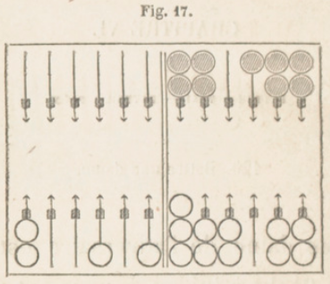
130. Dame qui bat. Battre du coin.
La marche pour battre est la même que pour jouer. Une dame qui bat ne change pas de place; il en résulte qu'une des deux dames du coin peut battre. Cela est différent pour remplir (V. n° 104, 2e alinéa), et l'on voit pourquoi.
131. Battre de une, deux, trois façons.
Dans la fig. 17, 4-1 bat d'une façon ; 3-1 bat de deux façons, du trois, du trois et un, des flèches onzième et dizième; 4-3 bat de trois façons, du trois, du quatre, du quatre et trois, des flèches onzième, dixième et septième. Quand on bat de deux façons , de trois façons, le gain est double, triple. On voit déjà la grande similitude entre battre et remplir, quand il manque une dame au plein.
132. Battre plusieurs dames.
D'un seul coup, on peut battre plusieurs dames. Soit la figure 18 : si l'adversaire amène 6-3, il vous bat les quatre dames des flèches troisième, quatrième, sixième, septième; deux sont battues d'une façon, deux le sont de deux façons.
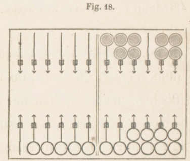
133. Voir si l'on bat.
S'il y a plusieurs dames découvertes, il faut faire l'examen pour chacune de ces dames, comme on vient de le faire.
134. Dames passées au retour.
Une dame passée dans la deuxième table ou la première peut battre ou être battue : si, avec la figure 13,vous avez amené 6-2, vous avez été forcé de jouer de votre septième flèche à la huitième de l'adversaire, pour ne pas rompre; si ensuite vous avez 6-4, vous battez de deux façons, de votre neuvième flèche et de la huitième de l'adversaire. Avec 3-1, il vous bat de deux façons.
135. Repos. Passage.
On a vu que, pour passer au retour, (V. 61, 77, 93), il faut se reposer sur une flèche où l'adversaire n'a aucune dame; celte flèche sert de passage pour aller s'arrêter sur une flèche où il n'y a pas de dame de l'adversaire.
Pour battre, c'est bien différent : il peut y avoir une dame de l'adversaire sur la flèche où l'on se repose, et une sur celle où porte la somme des deux nombres; les deux dames sont battues.
136. Battre à vrai. Battre à faux.
Une dame de l'adversaire sur une flèche empêche de s'y reposer pour passer au retour; on a fait, pour battre, une convention analogue. Si la somme des nombres d'un coup porte une de vos dames sur une dame de l'adversaire, vous la battez ; si le repos a plus d'une dame, le passage est fermé, le coup est contre vous, le gain est est pour l'adversaire, vous battez à faux. Quand le repos n'a pas deux dames, vous battez à vrai ; quand le repos a plus d'une dame, vous battez à faux.
137. Un passage ouvert.
Quand le coup est simple, il y a deux passages; il suffit que l'un soit ouvert. Ainsi, toutes les fois que les dés sont jetés • par vous ou l'adversaire, il faut bien examiner s'il y a un passage ouvert, s'il y a un gain pour vous ou pour lui.
138. Battre à vrai et à faux.
On peut du même coup battre à vrai des dames et en battre d'autres à faux. Si, avec les deux jeux de la figure 18 (page 14 5), l'adversaire amène 6-6, il bat à vrai les dames des flèches première, sixième, septième ; il bat à faux les dames des flèches troisième, quatrième, cinquième.
Les dames des flèches sixième et septième sont battues à vrai. On peut établir cette règle : _On bat toujours à vrai si l'on hat par l'un des deux nombres__.
139. Ce qu'on va voir.
Vous avez un gain pour tous les coups suivants : battre le coin, faire un des trois pleins, conserver, sortir le premier ses dames des flèches, battre à vrai une dame, faire le jan de trois coups, le jan de deux dames, le jan de mézéas. Vous donnez un gain à l'adversaire pour chaque nombre que vous ne jouez pas, pour le battre à faux, pour les deux contre-jans.
Je vais vous faire connaitre comment on nomme ce que l'on gagne, et comment on le marque. Ensuite je dirai la valeur de ces différents gains.
SECTION II.
CHAPITRE VII. POINTS. — TROU, — PARTIE ORDINAIRE.
140. Points. Trou. Partie ordinaire.
Ce que l'on gagne se nomme des points. Leur nombre est toujours pair : 2, 4, 6, 8, 10, 12, 14. La réunion de douze points s'appelle un trou ; douze trous font la partie ordinaire.
141. Marquer les points.
On les marque avec des jetons, dans le tablier, chacun de son côté. Puisque douze points font un trou, il suffit d'en savoir marquer 2, 4, 6, 8, 10. Pour dix points, on met le jeton (figure 1) près de la bande B C ; pour huit points, le jeton est près de la bande de séparation, dans la deuxième table ; pour six points, près de la même bande, dans la première table. Il reste à trouver la place pour deux points et pour quatre. Les flèches d'une table laissent entre elles et les deux bandes douze demi-intervalles, dont le tiers est quatre : donc le jeton doit être placé , pour deux points, vis-à-vis le milieu entre la première flèche et la deuxième ; pour quatre points, vis-à-vis le milieu entre la troisième et la quatrième.
Mettez bien ces places dans votre tête, pour ne jamais placer le jeton d'une manière incorrecte ou incertaine.
A mesure qu'on obtient des points, on avance le jeton à la place convenable.
142. Marquer les trous.
Chaque joueur marque avec son fichet les trous qu'il gagne ou qu'on lui donne. La grande bande placée devant vous a douze trous destinés à recevoir votre fichet, que vous avancez pour indiquer le nombre de trous que vous avez. A mesure que vous prenez un trou, vous y placez votre fichet.
143. Trou double. Bredouille. Trou simple. Débredouiller.
Si, par les points que l'on gagne ou que l'on reçoit, on arrive à douze sans être interrompu par des points de l'adversaire, on marque comme si ces douze points étaient doublés, on avance le fichet de deux trous au lieu d'un. Au contraire, le trou est simple, le fichet n'avance que d'un trou, si l'adversaire a interrompu par des points les douze qui le font trou du premier joueur. Quand on n'a pas été interrompu par des points de l'adversaire, on dit que l'on est en bredouille. Si l'on a été interrompu dans la série des points que l'on a pris, on dit que l'on est débredouillé.
144. Jetons pour les points. Bredouille.
Celui qui marque des points en premier les marque avec un seul jeton, et il est en bredouille. Celui qui en prend le deuxième les marque avec deux jetons, pour faire voir qu'il a la bredouille ; c'est-à-dire que, s'il arrive à douze points sans interruption, il doit marquer le trou double, Il doit ôter un des deux jetons, si le premier prend de nouveau des points avant qu'il soit arrivé à douze, parce qu'il est débredouillé. Si le deuxième joueur n'ôte pas un des jetons, le premier a le droit de le faire, même le coup d'après, quand il s'en souvient.
La place des jetons indique l'état des joueurs pour la bredouille. S'il y en a deux ou point au talon, un joueur a la bredouille; s'il y en a un au talon, aucun joueur n'a la bredouille.
Perdre la bredouille, c'est perdre le droit de marquer le trou double, quand l'adversaire a pris des points depuis les vôtres. Oter la bredouille, c'est ôter le deuxième jeton qui annonçait que l'on devait marquer double le trou que l'on ferait.
145. Oubli du deuxième jeton.
Lorsque celui qui doit marquer ses points avec deux jetons ne les marque qu'avec un, il peut prendre le deuxième jeton, s'il s'en aperçoit, tant qu'il n'a pas joué ses dames, s'il marque en premier, ou tant qu'il n'a pas jeté les dés, s'il marque le deuxième. Dans le cas contraire, il perd le droit de la bredouille, mais l'adversaire n'en peut profiter. Si celui qui gagne le trou double le marque simple , il n'est plus reçu à le marquer double dès qu'il a joué.
146. Un seul trou pour douze points de suite.
On peut gagner douze points ou davantage sans être interrompu, et néanmoins n'avoir pas le droit de marquer le trou double. Par exemple, vous faites quatre points et l'adversaire quatre; vous en faites ensuite seize : cela ne vous donne pas deux trous, parce que, aux quatre premiers qui ne sont pas en bredouille, vous en ajoutez huit des seize, pour en avoir douze, qui font un trou simple. Pour que le trou soit double, il faut que les douze points qui le forment aient été pris de suite.
147. Rentrer en bredouille.
Cela a lieu lorsque, ayant été débredouillé, on a gagné assez de points pour rentrer en bredouille. Par exemple, si vous avez huit points simples et l'adversaire autant en bredouille, si d'un coup vous gagnez dix-huit points, vous dites : Dix-huit et huit font vingt-six, un trou simple et un double, un, deux et trois; et en même temps vous prenez votre fichet, vous le portez aux trois trous suivants, mais vous ne le faites entrer réellement qu'au troisième. Si la somme de vos points allait à trente-six ou davantage, cela vous ferait cinq trous, parce que, des trois trous de trente-six, un seul est simple.
148. Points à effacer. Points de reste.
Lorsque vous marquez un ou plusieurs trous, les points au delà de douze, vingt-quatre, trente-six, sont des points de reste ; vous les marquez avec un jeton. Vous effacez les points qu'a l'adversaire, en remettant au talon son jeton ou ses deux jetons, et les vôtres s'il ne vous reste rien.
149. Points gagnés. Points donnés.
Si c'est vous qui avez jeté les dés, vous marquez ce que vous gagnez, soit pour remplir ou conserver, soit pour battre à vrai. Vous jouez ensuite votre coup avec une ou deux dames. L'adversaire alors inarque ce que vous lui avez donné, soit en le battant à faux, soit pour les nombres que vous ne pouvez jouer. Puis il jette les dés à son tour.
150. Points non marqués.
Il y a un cas où l'usage est de ne pas marquer les points que l'où gagne : c'est lorsque, par le même coup, on donne ou complète le trou à l'adversaire, et alors on doit dire : Je ne marque pas.
CHAPITRE VIII. CONVENTIONS SUR LES POINTS GAGNÉS OU DONNÉE.
151. Conventions sur les points.
Pour les nombres des différents points que vous gagnez à chaque coup, et de ceux que l'adversaire vous donne, on a fait les conventions suivantes.
152. Points gagnés par vous.
Le jan de trois coups vaut quatre points. Le jan des deux coins, le jan de mézéas, battre le coin, valent quatre points si le coup est simple, six points si c'est un doublet. Un plein quelconque que l'on fait ou refait, ou que l'on conserve, vaut, pour chaque coup, quatre points pour un coup simple, six pour un doublet. Si l'on remplit de deux ou trois façons, cela vaut deux fois, trois fois autant que pour une façon: un coup simple vaut donc quatre, huit, douze points ; un doublet vaut six ou douze points. Pour achever de lever le premier au jan de retour, on gagne quatre points si le dernier coup est simple, six points quand c'est un doublet.
Une dame découverte est plus souvent battue dans la deuxième table que dans la première, puisque dans la deuxième il suffit d'un des deux nombres, au lieu que pour la première il faut la somme des deux nombres. C'est peut-être pour cela qu' une dame battue dans la deuxième table vaut deux points et quatre par doublet ;
dans la première table, quatre points et six par doublet. Si une dame est battue de deux ou trois façons, cela vaut le double, le triple.
153. Points donnés.
Le contre-jan des deux coins et celui de mézéas valent quatre points et six par doublet. Chaque nombre non joué vaut deux points; le doublet ne change rien. Les dames battues à faux valent autant que les dames battues à vrai.
154. Résumé.
Quand on fait le jan de trois coups, le jan des deux coins, le jan de mézéas; que l'on fait un des trois pleins, ou qu'on en conserve un ; quand on bat le coin ou une dame dans une première table, ou que l'on achève de lever le premier $ on gagne à chaque coup et de chaque façon quatre points pour un coup simple, six points quand c'est un doublet.
Celui dont l'adversaire fait un des deux contre-jans, ou bat à faux dans une première table, gagne quatre points.
CHAPITRE IX. S'EN ALLER. — RESTER.
155. S'en aller.
Le joueur qui gagne un ou plusieurs trous dont les deux derniers points proviennent de son coup peut s'en aller, c'est-à-dire ?cmettre toutes ses dames au talon, et obliger Vadversaire à en faire autant, quelque beau que soit son jeu, pour recommencer à abattre du bois, en effaçant ses points de reste et ceux que l'adversaire marquerait si l'on ne s'en allait pas. On ne doit toucher aucune de ses dames (V. n° 46), car cela ôterait le droit de s'en aller.
Quand on recommence à jouer, ce qu'on appelle un relevé, la primauté appartient à celui qui s'en est allé, comme ayant gagné le trou. Il marque ses trous, dit : Je m'en vais, puis efface ses points et ceux de l'adversaire, et remet ses dames au talon. L'adversaire est obligé de relever aussi ses clames. Ensuite l'on continne la partie.
156. Conditions.
Pour avoir le droit de s'en aller, il faut achever le trou de son coup, n'avoir pas marqué les points de reste, n'avoir pas touché ses dames, et ne pas avoir dit : Je reste ou Je ne m'en vais pas. Si l'on s'en va, on dit : Je m'en vais, pour avertir l'adversaire qu'il est obligé de relever ses dames, Quand on a dit : Je m'en vais, l'adversaire peut forcer à s'en aller.
157. Points effacés en s'en allant.
On marque le trou ou les trous que l'on a complétés au moyen des points gagnés par son coup, et on a soin de remettre au talon les trois jetons, parce qu'on ôte à l'adversaire le droit de marquer ce qu'on lui donne en le battant à faux, même quand cela irait à vingt-quatre points, parce qu'il ne doit marquer que quand on a joué.
158. Rester.
C'est ne pas s'en aller. Quand on reste, ce qui a lieu le plus ordinairement, on marque ses trous et ses points de reste, en effaçant les points qu'avait l'adversaire; puis on joue son conp avec ses dames. L'adversaire perd les points qu'il avait
avant ce coup, mais il marque les trous et les points de reste que lui donne ce coup ; il faut qu'il marque le tout avant de jeter les dés ; il marque ses points en bredouille, avec deux jetons, si l'autre joueur a des points de reste.
159. Avantages. Désavantages.
Il est facile de voir qu'il y a souvent un très grand avantage à s'en aller, si l'on a un jeu moins bien disposé que celui de l'adversaire, ou si on lui donne deux trous ou plus, en le battant à faux. Le joueur qui s'en va "a l'avantage de la primauté. Il y a aussi très souvent de l'avantage à rester, par exemple : s'il reste six, huit ou dix points, avec la certitude de compléter un trou au premier coup, en conservant ; si l'on ne donne pas de points à l'adversaire, et s'il n'en peut prendre assez pour avoir un trou au coup suivant; et enfin si lejeu est mieux disposé que celui de l'adversaire pour remplir, conserver ou battre.
160. Décision difficile.
Il est souvent difficile de voir promp-tcment si l'on doit rester ou s'en aller. Une tenue imprudente peut faire perdre beaucoup de trous, et même la partie tout entière; mais on doit rester quand on a la certitude ou même l'espoir de gagner un ou plusieurs trous.
161. Conduite a tenir.
La première chose à faire quand on gagne ou complète un ou plusieurs trous de son coup, c'est de marquer ces trous avec son fichet; et d'effacer les points de l'adversaire et les siens; puis, s'il y a des points de reste, on garde son jeton dans sa main, jusqu'à ce que l'on ait examiné ce que seront les deux jeux, quand OR aura joué ce dernier coup. Si l'on se détermine à s'en aller, on met son jeton au talon; si, au contraire, on veut rester, on marque ses points de reste. Au lieu de garder le jeton dans sa main, on peut le déposer à la bande.
162. Relevé. Partie.
Un relevé a lieu quand, après avoir marqué un ou plusieurs trous et s'en être allé, on recommence à garnir le tablier pour gagner des trous, jusqu'à ce qu'un joueur s'en aille ou achève les douze trous. La partie est tout ce qui se fait depuis le commencement jusqu'à ce qu'un joueur complète douze trous.
163. S'en aller a la sortie des dames.
Au jan de retour, celui qui lève ses deux dernières dames, et qui arrive à douze points par ce coup, a le droit de s'en aller, ou de rester, après avoir jeté les dés. Il examine ce qui lui est le plus avantageux. Par exemple, s'il a dix points, et s'il amène 6-6, il doit rester, car il aura quatre points de reste et la somme douze à jouer; s'il amène 3-2, il doit s'en aller. Cette décision est tirée de Guiton, qui l'a justifiée par des raisons ; en voici une : la détermination que prend un joueur de rester ou de s'en aller doit être la suite d'un examen réfléchi de ce que peut lui faire espérer ou craindre le coup qui lui confère le droit de s'en aller.
CHAPITRE X. ECOLES.
164. Définition.
On fait une école si l'on marque plus ou moins qu'on ne doit marquer. L'adversaire marque pour lui ce qu'il y a de trop ou de trop peu ; il met à l'école, il envoie à l'école, il marque l'école. Il y a l'école par trop et l'école par moins.
165. Leur valeur.
Les écoles sont égales aux points qu'on a marqués de trop ou qu'on a oublié de marquer.
166. Ecole par trop. Ecole par moins.
La deuxième est plus préjudiciable que la première. Si chaque joueur a 6 points , et si l'un, gagnant 6 autres points, oublie de les marquer, il donne le trou à l'adversaire, au lieu de le prendre : cela fait une différence de deux trous, et même de trois si l'un ou l'autre avait la bredouille. L'école par trop, au contraire, ne porte qu'un préjudice simple, de 6 points, et laisse le trou à celui qui a fait l'école.
167. Quand l'école est-elle faite ?
L'école par trop est faite quand on a quitté son jeton, parce qu'on ne peut le reculer. Il faut la marquer avant de jeter ses dés, sans quoi on n'y est plus reçu , et le premier joueur garde les points et les trous qu'il a marqués de trop.
L'école par moins est faite dès que l'on a touché une dame (V. n° 46); elle l'est aussi quand on a jeté les dés, si elle vient d'un coup de l'adversaire. Elle ne serait pas faite si, gagnant 8 ou 10 points, on n'en marquait d'abord que 2, 4 ou 6; on aurait le droit d'avancer le jeton, tant que l'on n'aurait pas touché de dame , on jeté les dés. Elle serait faite si, au jan de retour, on levait par erreur une dame de l'adversaire.
168. Écoles de l'adversaire.
La première attention est d'éviter les écoles; la deuxième est d'examiner si l'adversaire en fait. On a un grand avantage sur lui si l'on n'en fait point ou presque point, et si l'on relève exactement celles qu'il fait. Au commencement de chaque relevé, il faut voir si vous ou l'adversaire ne faites point l'un des cinq jans.
169. Jeton à la bande.
Si l'on fait un trou, et si l'on oublie les points de reste, on est mis à l'école. Une erreur plus fréquente, c'est d'oublier d'effacer les points que l'on avait avant le coup, de ne point remettre le jeton au talon, lorsque le coup complète un ou deux trous, et qu'il ne reste rien : alors l'adversaire met à l'école et prend pour lui les points que l'on avait laissés marqués. Cependant si l'on avait des points au delà des douze, on n'est mis seulement à l'école de ce qui se trouve marqué de trop. Il n'y a pas d'école sijfon s'en va.
Lorsque, croyant qu'un trou est gagné par vous ou par l'adversaire, on démarque les points précédemment acquis, et que l'on remet le jeton à la bande sans marquer le trou, si l'on reconnaît son erreur avant d'avoir jeté les dés ou joué une ou deux dames, on est admis à les reprendre, en remettant le je ton à la place qu'il occupait ; si au con-traire le coup était fini lorsque l'erreur est reconnue, les points effacés seraient perdus, mais on n'encourrait pas la peine de l'école. Cependant si, en démarquant ses points, au lieu de mettre le jeton à la bande, on le posait à une placé qui indique la marque de deux ou quatre points, on ne serait plus admis à réparer cette erreur,, quoiqu'on n'eût ni marqué le trou, ni jeté les dés, ni joué de dame ; on remettrait le jeton à la place qu'il occupait ; et l'adversaire marquerait l'école des points qui manqueraient pour avoir le trou, et ceux qui auraient été marqués de reste.
170. S'en aller sans en avoir le droit.
Si l'on s'en va en marquant le trou n'ayant pas assez de points, on est à l'école dès que l'on a commencé à lever ses dames. L'adversaire peut forcer de remettre les dames comme elles étaient, et de jouer à son désavantage les dames levées pour s'en aller. L'adversaire peut ainsi empêcher de remplir ou conserver; il peut en outre marquer les points que l'on marquait de trop. Si, dans ce cas, l'adversaire avait déjà levé une ou plusieurs de ses dames, lorsqu'il s'aperçoit de l'erreur, il ne peut ni mettre à l'école le premier joueur, ni le forcer de rester.
171. Examen des deux jeux.
A chaque coup, aussitôt que les dés sont jetés, chaque joueur doit regarder les deux jeux. Celui qui a jeté les dés examine ce qu'il gagne et le marque avant de toucher une dame (V. no 46), car sans cela il sera mis à l'école. L'autre joueur examine si le premier a joué ce qu'il devait jouer, et s'il a marqué tout ce qu'il était obligé de marquer : s'il y a lieu, il marque l'école et en outre les points qu'on lui a donnés. Si ce deuxième joueur jette les dés avant de marquer les points qu'on lui donnait, le premier le met à l'école pour cela.
172. Paroles et marques différentes.
Si l'on dit : Je gagne huit points, et que l'on n'en marque que six, aussitôt qu'on a touché ses dames, on est mis à l'école de deux points. Si l'on dit : Je gagne six points, et que l'on en marque huit, on peut être mis à l'école de deux points, quand on a lâché son jeton.
173. Plus ou moins de trous.
Ayant dix points, on amène un coup qui en donne douze; par erreur, croyant en gagner quatorze, on marque trois trous, et l'on rompt le jeu pour s'en aller : l'adversaire a le droit d'obliger à rester, de remettre à dix points en faisant effacer deux trous, et de marquer l'école de deux points.
Si l'erreur a lieu en sens contraire; si l'on a amené un coup qui donne réellement trois trous, et que, croyant n'avoir que vingt-deux points, on se contente de marquer un trou, puis de s'en aller, l'adversaire ne peut forcer à rester et mettre à l'école; on perd seulement les deux trous qu'on a oublié de marquer.
174. Trous démarqués.
Si, gagnant un ou plusieurs trous, au lieu de les marquer en avançant son fichet, on le fait au contraire rétrograder; si même on met son fichet au talon, au point de départ, on est admis à reprendre les trous démarqués, ainsi que ceux nouvellement gagnés, quand même on aurait marqué des points de reste, pourvu que le coup ne soit pas consommé : car, si on avait joué ses dames ou jeté les dés, on ne pourrait reprendre que les trous anciennement acquis, et non ceux nouvellement gagnés. Ces deux cas sont semblables à celui où, ayant à marquer un ou plusieurs trous et des points, on se contente de marquer les points, en oubliant les trous.
175. Points démarqués a la sortie.
Au jan de retour, à la sortie des dames, en les remettant au talon, si l'on démarque ses points, on les perd, mais l'adversaire n'en peut marquer l'école. Pour être passible de l'école, il faut avoir marqué des points qu'on n'a pas, ou n'avoir pas marqué des points qu'on a; mais ici il y a seulement abandon de points acquis précédemment, il y a faute.
176. Avertissement qu'on ne marque pas.
C'est un usage qui a force de loi, qu'un joueur qui gagne des points par le coup qu'il amène, mais qui, par le même coup, donne le trou à l'adversaire, au lieu de marquer les points qu'il gagne, se contente d'avertir qu'il ne marque pas; et cet avertissement équivaut à la marque réelle avec le jeton des points gagnés, car, par la marque du trou, ils seraient effacés aussitôt que marqués. Cet avertissement suffit pour priver l'adversaire de la bredouille des jetons, s'il l'a, et alors il ne peut marquer que le trou simple. Mais si le joueur qui a averti, parce qu'il croyait donner le trou, ne le donne pas, il n'a pas le droit, après avoir joué son coup et lorsqu'il reconnaît son erreur, de reprendre les points qu'il n'a pas marqués. Si l'adversaire a la bredouille des jetons,il la conserve malgré l'avertissement.
Il en est autrement si le joueur qui croit donner le trou le gagne lui-même. Supposons qu'ayant quatre points et l'adver-saire huit, il batte par son coup deux dames à vrai, mais qu'il croie en battre une à vrai et l'autre à faux, et avertisse en conséquence qu'il ne marque pas , alors l'adversaire a le droit de marquer quatre points d'école, qui lui donnent le trou, trou simple, à cause de l'avertissement.
177. Avertissement a tort.
Si le joueur averti qu'il a le trou ne l'a pas, mais le marque néanmoins, l'adversaire peut, s'il s'en aperçoit à temps, le lui faire effacer en le réduisant aux points qu'il avait; mais il ne peut marquer l'école : on ne peut profiler d'une erreur qu'on a occasionnée.
178. Fichet déplacé.
Le déplacement du fichet pour marquer des trous qu'on n'a pas ne fait pas école, parce qu'on n'a pas touché ses dames, ni placé son jeton.
179. Trou sans bouger.
Si d'un coup on gagne douze points, et qu'en marquant le trou on remette le jeton au talon, on fait école des points qu'on avait. Si, ayant dix points, on mettait le jeton à six, on ne ferait école que de quatre points.
180. Trou pris par erreur.
Croyant avoir le trou qu'on n'a pas, on le marque, et on rompt pour s'en aller : si l'adversaire, partageant l'erreur, rompt aussi, le trou est bien acquis.
181. Points démarqués.
Si, croyant que l'adversaire fait école, on efface ses points, sans les marquer, on ne fait pas école.
182. Ecole d'école.
Elle n'a point lieu. Si l'adversaire fait une école, et si vous ne la marquez pas, il ne peut vous mettre à l'école pour cela.
183. Fausse école.
1° Si l'adversaire , croyant que l'on fait une école,la marque, il est mis à l'écdle. Par exemple, on a trois cases dans sa deuxième table, les deux coins sont vides; on jette les dés et on ne marque rien ; l'adversaire, croyant que l'on bat son coin, met à l'é-cole : on efface ces points et on les marque pour soi.
2° L'adversaire a quatre points, on en a dix ; on amène un coup qui donne quatre points, on marque le trou et deux points de reste; l'adversaire, ne voyant pas comment on gagne ces quatre points, croit qu'il y a école; en conséquence, il démarque le trou, remet à dix points, et, rétablissant sa marque, il ajoute quatre points pour l'école à ceux qu'il avait déjà, et en marque huit : on démontre l'erreur, on reprend son trou avec deux points et on en ajoute quatre.
184. Ecole de trou.
' II n'y en a pas si, ayant le trou simple, on le marque double, ou bien, l'ayant double, on le marque simple: car un trou double, comme un simple, est la représentation de douze points; la seule différence, c'est que le premier représente douze points pris sans interruption, et le deuxième avec interruption. Le nombre des points marqués par le trou double et le trou simple étant égal, il n'y a pas école; on fait démarquer un trou lorsqu'on l'a marqué double, ne l'ayant que simple. Mais si, ayant par son coup trois trous, on n'en marque qu'un, ou si, n'ayant droit d'en marquer qu'un ou deux, on en marque trois ou quatre, on fait école de douze points, parce que trois ou quatre trous sont la représentation de vingt-quatre points , et que , ne devant en marquer que douze, on a fait école de douze.
Il n'y a pas non plus lieu à l'école lorsque, gagnant par le coup survenu assez de points pour compléter le trou et même au delà, on déplace son jeton, on le remet à la bande s'il n'y a pas de reste, et on marqua ce reste s'il y en a, mais en oubliant de marquer le trou. En effet, c'est le déplacement du jeton posé à la place qu'il doit occuper qui constitue la marque, et non le déplacement du fichet.
Mais si , gagnant un trou sans bouger, on ne le marque pas, l'adversaire a le droit de marquer l'école de ce trou, parce que, dans ce cas, il n'y a point à déplacer le jeton qui marque les points, et en ne marquant pas les douze points qui font un trou, on fait l'école de ce trou.
185. Obliger de inarquer un trou.
Lorsqu'on amène un coup qui donne un trou à l'adversaire , si l'on a intérêt à l'obliger de marquer ce trou , on doit l'avertir et lui imposer cette obligation avant que les dés soient jetés pour le coup suivant. Si l'on agit autrement, on est déchu du droit d'obliger à marquer ce trou. Si, pour prévenir l'avertissement, l'adversaire s'empresse trop de jeter les dés, il faut les rompre. Par exemple , si le jeu de l'adversaire est mauvais, s'il lui manque quatre points pour achever un trou , et si on le bat à faux de quatre ou six points, il faut l'obliger à marquer ces points ; par ce moyen il ne peut s'en aller. Si cependant on n'a besoin que des points de cette école, volontaire ou non, pour achever un trou, on doit en profiter, puisque l'on efface tous ses points.
186. Ecole volontaire.
Lorsque l'adversaire fait une école, ou par moins ou par trop, dont les résultats présentent pour lui une grande utilité, on présume, et souvent avec raison, que cette école a été faite volontairement. On est maître de marquer ou de ne pas marquer l'école, d'obliger à marquer les points omis, ou d'effacer ceux qui ont été marqués de trop. Tout cela doit se faire avant de jouer un autre coup.
Ces écoles sont faites pour empêcher de s'en aller, ou pour conserver la possibilité de s'en aller. Par exemple, l'adversaire a son grand jan et ses trois dames surnuméraires aux flèches cinquième, dixième, onzième ; on a son grand jan moins une dame à la septième flèche, et ses quatre dames surnuméraires au talon et aux flèches première, deuxième, cinquième; on amène 4-3, on remplit, et l'on bat l'adversaire à faux; il a déjà huit points, cela lui donne le trou et l'empêche de s'en aller, avec un jeu bien mauvais. L'école est volontaire ou non, mais il faut l'empêcher, et obliger l'adversaire à marquer le trou.
187. Ecole entière.
Si l'adversaire fait une école, on n'est pas obligé de la marquer ; mais on ne peut le faire partiellement, on est contraint de la marquer dans sa totalité. Si c'est une école par trop , et qu'on ne juge pas à propos de la marquer, on se contente d'effacer les points qui ont été marqués de trop.
L'adversaire a huit points avec un jeu si mauvais, qu'il a le plus grand intérêt de ne pas recevoir le trou, mais de le prendre ; on fait une école de quatre points; par erreur, l'adversaire croit qu'elle n'est que de deux points, et les marque : on l'oblige à marquer le trou, en marquant l'école entière.
L'adversaire amène un coup par lequel il bat à vrai et à faux ; il ne s'aperçoit pas qu'il bat à vrai, et joue sans rien marquer. On reconnaît l'école, on marque quatre points seulement, parce qu'on ne voit pas qu'on est battu à faux. L'adversaire prétend qu'on a fait une école de quatre points, que l'on devait en marquer huit, quatre pour l'école et quatre pour être battu à faux ; mais on répond qu'on n'était obligé qu'à marquer les quatre pour être battu à faux.
On a huit points et un jeu très mauvais ; on a le plus grand intérêt à s'en aller. L'adversaire fait une école, volontaire -ou non , en marquant deux points qu'il n'a pas. On efface ces deux points, dont on marque l'école, et l'on se met ainsi à dix points; l'adversaire vous remet à huit points, et en marque quatre. On se contente d'effacer ces quatre points, et l'on se remet à dix, en faisant connaître l'erreur. On n'est pas obligé de marquer quatre points, parce qu'il n'y a pas une école de quatre points, mais bien deux écoles de deux points chacune ; on a le droit de marquer la première et de ne pas marquer la deuxième.
188. Attendre pour marquer.
Quand l'adversaire fait une école de points qu'on lui donne, elle peut être marquée aussitôt que les dés sont jetés. Il vaut mieux attendre que l'adversaire ait achevé de jouer son coup, parce qu'après ce coup joué on est mieux en état de décider s'il est utile ou non de la marquer. D'ailleurs, celui qui a fait l'école joue souvent son coup sans s'en apercevoir, et le joue d'une manière toute différente de celle qu'il choisirait s'il en était averti auparavant. Par exemple, si l'adversaire qui a fait l'école n'a plus qu'une case à faire pour achever son plein, et qu'on n'ait encore que quatre points, il pourra mettre dedans, ignorant que l'on va marquer une école qui mettra à huit points; ce qu'il n'eût pas fait si l'école eût été connue avant qu'il jouât son coup.
189. Attendre. Battu à faux.
Par le même motif, on ne doit marquer les points qu'on gagne en étant battu à faux qu'après que l'adversaire a joué son coup, car cela peut influer sur sa manière de jouer. Il est possible que, ne s'apercevant pas des points qu'il donne, il s'expose au danger de perdre le trou ; ce qu'il n'aurait pas fait s'il eût été averti par cette marque trop précipitée des points. Il peut même faire école en marquant ce qu'il bat à faux.
190. Les trous avant les jetons.
L'usage et la régularité du jeu exigent que l'on marque les trous qu'on gagne avant de déplacer les jetons. Le contraire peut donner lieu- à des contestations sur la bredouille. Si l'adversaire qui vient de recevoir quatre points par vos dés oublie, en les marquant, de prendre la bredouille, et qu'il amène aussitôt un coup qui lui donne huit points, il est clair que, s'il déplace les jetons avant de marquer le trou, il pourra marquer double le trou qu'il ne devrait marquer que simple ; vous pouvez exiger que le trou soit marqué simple.
191. Trou double.
Si l'on a le trou double et qu'on ne marque que simple, on n'est plus admis à rectifier son omission lorsqu'on a touché ses dames ou jeté les dés ; mais si l'on n'a touché que les jetons, on le peut encore.
Celui qui marque le trou simple au lieu de le marquer double, ou qui oublie de marquer Je trou, et lève ses dames pour s'en aller, n'est plus admis à réformer son erreur ; l'enlèvement des dames est assimilé à un coup joué.
192. Remplir, conserver.
Si l'on marque des points croyant remplir ou conserver, quoiqu'on ne remplisse pas ou qu'on ne conserve pas, on fait école des points marqués. Si, pouvant remplir, on ne remplit pas, ou, pouvant conserver, on ne conserve pas, l'adversaire marque autant de points qu'on aurak dû en marquer. Si, ayant bien reconnu que l'on remplit ou conserve, on marque les points qui sont acquis, et si par erreur on lève une dame qui mette dans l'impossibilité de remplir ou force de rompre, on fait école : l'adversaire efface les points et les marque à son profit. Dans l'un comme dans l'autre cas, l'adversaire a le droit d'obliger ou d'empêcher de remplir ou de conserver, sans que cette détermination change rien à l'école. Cette école ne sera point faite si l'on suit le conseil donné au n° 57 : Jouer d'abord la dame qui remplit.
193. Grand jan trop conservé.
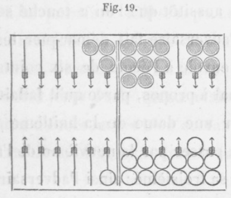
Il est très dangereux de vouloir conserver un grand jan trop long- temps, et de se fier sur l'espérance d'amener de petits nom'bres: ou de recevoir des; points : car souvent il arrive que l'on est forcé de rompre. On a ces deux jeux; on fait un 6-6, et croyant n'être pas obligé de rompre , on marque avec les six points que l'on avait et six pour le plein un trou double, et l'on s'en va, parce qu'on donne six points, et parce que le jeu de l'adversaire est bien plus beau, et que vous pouvez être enfilé.
Mais aussitôt que l'on a touché ses dames, l'adversaire fait démarquer les deux trous, envoie à l'école de six points Illarqués mal à propos, parce qu'il fallait rompre par une dame de la huitième flèche pour la passer par la neuvième de l'adversaire à sa troisième : ainsi l'adversaire, gagnant six points comme battu à faux et six points pour l'école , marque un trou double. Si l'adversaire, croyant qu'on a gagné, levait une ou plusieurs de ses dames, il ne pourrait envoyer à l'école.
191. Augmentation d'école.
Cela a lieu quand on a fait une véritable école que l'adversaire a marquée. On croit que l'adversaire s'est trompé, on la démarque et on la marque à son profit. Celui-ci , à son tour, démarque vos points , et ajoute à la première école les points marqués parla deuxième, en vous donnant l'explication de l'erreur. Ce n'est pas en démarquant la juste école qu'on a fait l'augmentation d'école, mais bien en marquant les points de la prétendue fausse école.
195. Ecole des deux jetons.
On a huit ou dix points, on amène un coup qui en donne quatre; on oublie ceux qu'on a déjà, et on prend pour les marquer un des jetons de la bande : l'adversaire a le droit d'ôter l'une des deux marques, mais il ne peut pour cela marquer l'école. Ce qui caractérise essentiellement l'école, c'est la marque des jetons : on a bien exactement marqué le nombre de points que donne le coup; mais en les marquant on parait seulement avoir fait abandon de ceux qu'on avait déjà, et à cet égard on ne peut être assujetti à d'autre peine qu'à celle d'en être privé. Et même dans cette circonstance, pour que la faute soit consommée, il ne suffit pas qu'on ait placé et abandonné le jeton. Si l'on s'aperçoit de son erreur avant d'avoir joué son coup, ou d'avoir jeté les dés, on est admis à réparer cette erreur; on peut remettre à la bande le jeton dont on s'est servi mal à propos, et marquer avec le premier jeton les nouveaux points qu'on gagne.
Lorsqu'on a huit points avec la bredouille et que l'adversaire en a quatre, s'il amène un coup qui lui donne quatre autres points ou six, il arrive souvent qu'en ôtant la bredouille, il se sert du jeton qui l'indiquait pour marquer les nouveaux points qui lui sont acquis, et alors il doit remettre à la bande le jeton qui marquait les premiers points. S'il néglige de le faire, et qu'il joue son coup, on a le droit d'ôter une des marques sans marquer l'école, comme dans l'exemple précédent.
196. Ecole de privilège.
Si l'on rompt le jan de retour, pouvant le conserver par le privilége de la bande (V. n° 110), on fait école. Ayant le jan de retour et ses dames surnuméraires aux flèches deuxième, troisième et quatrième, si, ayant 5-4, on rompt, l'adversaire met à l'école, car on pouvait conserver.
197. Ecole impossible.
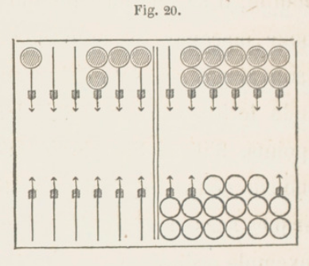
Pour que l'école par omission soit consommée, il faut que celui qui la fait ait jeté les dés, ou qu'il ait touché ses dames sans avoir dit : J'adoube. Il peut arriver qu'on omette de marquer des points qu'on gagne, n'ayant à faire aucun des deux actes exigés pour l'école : c'est ce qui arrive dans l'exemple suivant. Avec ces deux jeux, vous amenez 6-6, qui vous donne douze points, six pour conserver, et six pour battre à vrai la dame du talon; mais, ne vous apercevant pas que vous battez à vrai, vous vous contentez de marquer six points, et, comme vous ne pouvez jouer votre 6-6, il n'y a aucun acte à faire qui constitue l'école et la détermine. L'adversaire, privé de tous moyens de s'en approprier le bénéfice, doit se contenter de marquer deux trous pour les deux dames battues à faux, et quatre points pour les six non joués. Néanmoins, si vous reconnaissez l'erreur avant d'avoir de nouveau jeté les dés, vous avez le droit de faire effacer les deux trous de l'adversaire, d'en marquer deux, et de vous en aller comme votre position l'exige.
Cependant cette école serait acquise à l'adversaire si vous le provoquiez à jeter les dés, parce que cela constaterait l'omission.
Il en serait de même s'il ne manquait que quatre points pour prendre le dernier trou de la partie, et si, croyant les gagner par le coup qu'on amène, on se levait sans toucher à aucune dame, en disant : J'ai gagné. L'adversaire, n'ayant aucun droit de marquer l'école, n'aurait qu'à faire reconnaître l'erreur, et à faire continuer la partie. Si la partie devait être suivie d'une autre, il faudrait attendre qu'on touchât ses dames pour les relever et les mettre en piles : l'adversaire, s'opposant à l'enlèvement des dames, marquerait les quatre points d'école, et la partie continuerait.
198. S'attacher aux principes.
Quelque soin que l'on prenne pour prévoir toutes les difficultés qui peuvent survenir, il s'en présente qui n'ont pas été prévues. Il faut toujours remonter aux principes et aux règles qui sont applicables aux questions à décider. Les difficultés dont je vais rendre compte sont simples et faciles à résoudre.
199. Premier exemple.
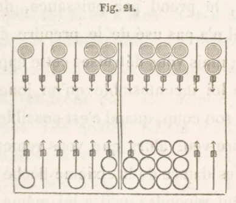
Les deux jeux sont comme ici. Vous amenez 6-6. Vous n'avez qu'un seul moyen de jouer ce coup, c'est de prendre votre coin directement avec les dames de la cinquième flèche; mais vous vous trompez et prenez votre coin par puissance avec les dames de la sixième flèche. L'adversaire, qui s'aperçoit de l'erreur, réforme le coup, et remet les dames sur la sixième flèche. Alors, ne pouvant jouer votre 6-6 autrement, vous prenez votre coin directement. L'adversaire vous oppose la règle qui prive celui qui, pouvant prendre son coin directement , le prend par puissance, du droit dont il n'a pas usé de le prendre directement; mais vous détruisez cette opposition par la loi incontestable qu'un joueur doit jouer son coup, quand c'est possible. L'adversaire veut alors que vous remettiez au coin les dames de la sixième flèche ; mais vous lui répondez qu'il a lui-même rétabli les dames comme elles étaient auparavant, et qu'il vous a forcé à prendre le coin directement.
200. Second exemple.
Un joueur battu à faux ne s'en aperçoit pas; il jette les dés, et fait par conséquent quatre points d'école ; par ce coup il bat à vrai et à faux, il marque quatre points pour la dame qu'il bat à vrai; l'adversaire en marque huit, quatre pour l'école, quatre parce qu'il est battu à faux. A-t-il le droit de marquer ces huit points en bredouille ? Non, car ces points sont composés de deux parties, et n'ont pas été acquis simultanément. Les quatre points d'école lui étaient acquis avant les quatre que le joueur gagne par son coup; les points, au contraire, qu'il donne en battant à faux, résultant du même coup, doivent être marqués après.
Pour rendre cette vérité plus sensible, on peut supposer qu'au moment où J'école a été faite, chacun des joueurs avait huit points: si le joueur qui fait l'école, et qui par le coup suivant a battu à vrai, eût marqué le trou, l'adversaire s'y serait opposé, en réclamant la priorité à raison de l'école; il aurait marqué ce trou en effaçant ses huit points, ainsi que les huit points que le joueur avait.
201. Troisième exemple.
1° Un joueur dont l'adversaire a déjà huit points a son grand jan, moins la case de la dixième flèche; trois de ses dames sont à la cinquième flèche, et deux sur deux autres flèches de la première table. Dans cet état, il amène 5-1. Ne voulant pas s'expo-ser à perdre le trou en mettant le cinq sur la flèche vide, il joue tout d'une en portant au coin une des dames de la cinquième flèche; mais, oubliant qu'il a joué tout d'une, et croyant qu'il lui reste encore l'as à jouer, il joue cet as dans sa première table. L'advei-saire prétend que puisque, après avoir joué la première dame, on a joué l'as, cette première dame doit reculer à la dixième flèche. On lui répond par cette loi : Quand une dame a été bien jouée, une deuxième dame mal jouée n'a aucune influence sur la première. L'adversaire n'a que le choix de laisser la deuxième dame où elle est, ou bien de la faire reculer d'une flèche.
2° On a des cases aux flèches cinquième, sixième, dixième, onzième; des demi-cases aux flèches quatrième, septième; on amène 2-1, on joue le deux de la cinquième flèche à la septième, et par erreur on joue Pas du talon à la deuxième flèche. L'adversaire ne peut forcer à jouer la première dame tout d'une, puisqu'elle a été bien jouée ; il a le choix de faire placer la deuxième à sa première flèche, ou de la laisser où elle est. Il n'en serait pas de même, dans ces deux exemples, si on joue l'as d'abord, puis le cinq ou le deux : dans le premier cas, le cinq eût porté la deuxième dame à la dixième flèche; dans le second, le deux ayant été réellement joué avec la première dame, la deuxième irait à la sixième flèche.
3° On a son grand jan, moins une dame à sa septième flèche ; on amène 6-1 ; on remplit avec une dame du talon; oubliant qu'on a tout joué, on joue un as du talon.
Même décision que dans les deux autres cas.
CHAPITRE XI. NOUVELLES LOIS. —PRÉAMBULE NÉCESSAIRE. — DÉS. — POINTS. — DAMES.
§ 1. PRÉAMBULE NÉCESSAIRE.
202. Observer les règles.
Le jeu de trictrac veut être joué avec une rigide observation de toutes les règles que l'usage et la raison ont consacrées ; s'en écarter, c'est ouvrir un vaste champ aux difficultés, aux contestations. Les règles ont des bornes fixes et certaines , l'indulgence et la tolérance n'en ont pas : tel qui vient de se montrer indulgent pour une très légère fauté réclamera le moment d'après, la même faveur pour une faute beaucoup plus grave, et de laquelle dépend quelquefois le sort de la partie. Rien d'ar-bitraire dans les règles; tout l'est, au contraire, dans les modifications qu'on veut y apporter. Si l'on se plaint aujourd'hui de leur sévérité, parce qu'on en est la victime, demain on se louera de cette même sévérité, parce qu'on aura l'occasion de l'appliquer à son avantage. Ce qui doit surtout, dans l'observation des règles, détourner d'adopter un pareil relâchement, c'est qu'il fait nécessairement contracter l'habitude d'une certaine négligence irréfléchie dans la conduite du jeu, laquelle peut devenir très préjudiciable lorsqu'on a l'occasion de jouer avec des personnes qui n'a-doptent pas le même système de tolérance. Cette rigueur dans les lois, et cette gravité dans les peines attachées aux fautes, ont pour but principal de forcer les joueurs a apporter la plus grande attention au jeu. Nous croyons donner un avis très utile à tous les joueurs en les invitant à se soumettre sans répugnance à la rigidité des lois de ce jeu. Il faut se souvenir qu'on doit être plus sévère pour soi que pour les autres.
§ 2. LES DÉS.
203. Dé couvert, hors du tablier.
Un dé sur l'autre, ou sur la bande, ou hors du tablier, rend le coup nul ; on jette de nouveau les dés.
204. Dé incliné , épreuve.
Si un dé est incliné, de manière à ne pas porter sur sa base , le coup n'est pas bon. Si le dé est incliné sur les jetons, il est bon. Lorsqu'un dé est posé sur une dame contiguë à la bande et qu'il s'appuie sur cette bande, pour connaître s'il est bon, celui qui a intérêt à ce qu'il le soit doit écarter de la bande, avec précaution, la dame sur laquelle le dé est posé , et la tirer en avant : si le dé reste sur la dame, il est bon ; s'il tombe, il est mauvais.
205. Dé pirouettant.
Si, après avoir lancé les dés, l'un d'eux tourne long-temps sur une pointe, un des joueurs peut, d'accord avec l'autre, le fixer, en l'arrêtant avec le fond du cornet, sans le pousser. Si on le faisait sortir du tablier, l'autre joueur aurait le droit de faire recommencer le coup entier, ou de faire retirer le dé sorti. Tant qu'un dé tourne, on ne doit pas ôter l'autre.
Le mieux est de laisser tourner le dé jusqu'à ce qu'il s'arrête. Si cela arrive souvent, il faut voir si les dés sont usés, et alors en changer.
206. Relever les dés. Jeter les dés.
On ne doit pas relever les dés avant que le coup soit joué, ou au moins que les nombres aient été nommés par celui qui a jeté les dés.
Il ne faut pas jeter les dés avant que l'adversaire ait joué son coup, car il pourrait le jouer sur des nombres connus et avec sécurité. On dit qu'il y a des joueurs qui affectent, en jouant, une grande lenteur, pour profiter de la vivacité et de l'impatience de l'autre joueur. Dans ce cas , il faut avoir beaucoup de patience pour les corriger de leur lenteur. On- ne doit pas couvrir ses dés avec la main; c'est défendu.
§3. LES POINTS.
207. Points gagnés, points donnés (V. n° 152, 153).
Les points gagnés se marquent avant les points donnés. Par exemple, chaque joueur a dix points ; le premier jette les dés, bat son adversaire à vrai de deux points et à faux de deux points; il marque le trou et efface les dix points de l'adversaire, qui marque ensuite les deux points qui lui ont été donnés. Les joueurs ont chacun dix points et leur plein; le premier amène un coup qui le fait conserver par impuissance et lui donne quatre points ; il marque un trou et deux points ; il efface les dix points de l'adversaire, qui marque ensuite deux points pour le nombre qui n'a pu être joué.
208. Battu à vrai, battu à faux.
Le joueur qui, par le même coup, est battu à vrai et à faux, ne doit pas marquer les points qu'on lui donne avant que l'ad-versaire ait marqué les points qu'il gagne. Si le joueur battu à vrai et à faux gagne le trou par ce coup, il ne doit pas le marquer avant que l'adversaire ait marqué ses points, à moins qu'il n'en reçoive de lui l'avertissement : car il serait possible que l'adversaire, ne s'apercevant pas qu'il bat à vrai, fît école; et l'autre joueur la marquerait.
209. Points à effacer (V. n. 148).
En marquant un trou , il faut effacer les points marqués par l'adversaire. Si on ne le faisait pas, on s'exposerait à ne pas profiter de l'école qu'il peut faire. S'il a quatre points, et si, par le coup qui donne le trou, il est battu à faux de quatre points, il est possible qu'il ne s'en aperçoive pas : il faut donc démarquer les points de l'adversaire.
Celui qui donne le trou ne doit pas non plus s'empresser d'effacer lui-même ses, points ; cela peut fournir matière à quelques erreurs. Le joueur qui marque le trou, ne voyant pas de points marqués par l'adversaire, peut croire qu'il doit le marquer double.
§4. LES DAMES.
210. Dame sur une autre.
Quand une dame a été enlevée de sa place, et posée sur une autre dame (ce qui ne peut arriver que quand on a l'intention de faire une case), il est incontestable qu'on doit jouer celle sur laquelle on a placé la première dame. L'intention de la jouer est manifestée de manière à ne laisser aucun doute. Ainsi, c'est bien le cas d'appliquer la loi (V. n° 46) : Dame touchée, dame jouée.
211. Dame mal posée.
Lorsqu'on abandonne une dame sur une flèche autre que celle où le nombre doit aboutir, soit en deçà, soit au delà, cette dame reste entièrement à la discrétion de l'adversaire. Il peut, selon que son intérêt l'exige, ou la laisser à la place à laquelle elle est posée, ou la mettre à sa vraie place, ou même obliger de jouer avec cette dame le coup entier tout d'une, s'il y a possibilité. Mais ce droit de faire jouer tout d'une n'a lieu que dans le cas seulement où cette dame aurait été portée au delà du nombre le plus fort : car, si elle eut été posée en deçà, il ne resterait que le choix, ou de la laisser à la place à laquelle elle a été posée , ou de la mettre à celle où elle aboutit véritablement. Si l'un des nombres avait d'abord été joué régulièrement, on ne pourrait exiger que le coup entier fût joué tout d'une (V. n° 201).
212. Dame abandonnée.
Lorsque, pour jouer l'un des nombres amenés, on a posé et abandonné une dame sur une flèche, et qu'on se repent ensuite de n'avoir pas joué préférablement l'autre nombre avec cette dame, on n'y est plus admis; elle doit rester à la place où elle a été posée pour jouer le premier nombre, et elle n'en peut sortir que pour jouer tout d'une. Ainsi, par exemple, si, ayant amené 5-3 , l'on a d'abord joué le trois avec une dame qu'on a abandonnée sur la flèche où ce nombre aboutissait, et qu'on reconnaisse qu'il aurait été préférable de jouer le cinq avec cette dame, on ne le peut plus.
213. Dame dans une table de l'adversaire.
On a vu (V. n° 61) qu'on ne peut placer aucune dame dans une table où l'adversaire peut faire un plein. Néanmoins il peut arriver que, par une inadvertance commune aux deux joueurs, l'un d'eux entre une dame dans une table de l'adversaire, lorsqu'il peut y faire un plein. Si l'adversaire ne réclame pas et jette les dés, l'erreur est consommée, et le coup ne peut être réformé pour le présent. Mais si, après ce coup joué, il est encore possible de remplir, et si l'on s'aperçoit de la faute, on a le droit d'obliger, si c'est dans sa deuxième table, à en sortir au coup suivant, si c'est possible, en passant dans la première table. Si le coup amené s'oppose à ce passage, on a le droit d'empêcher qu'il soit introduit une autre dame. Prenons l'exemple suivant.
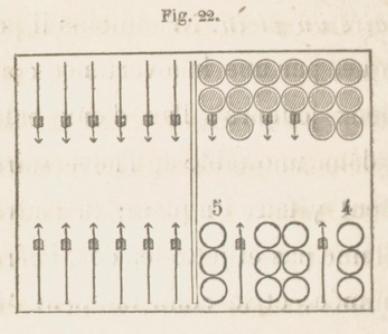
L'adversaire amène 4-2, qui l'oblige à rompre ; mais, ne s'apercevant pas que vous pouvez remplir, il croit conserver, marque quatre points, et joue de sa septième flèche à votre dixième. Partageant l'erreur, vous ne réclamez pas, et jetez les dés, qui vous donnent 6-1. En portant votre as de la huitième flèche à la neuvième, vous voyez l'erreur, et que vous pouvez remplir. L'adversaire amène 6-5. Il pourrait conserver, en passant dans votre première table une des dames surnuméraires de sa i dixième flèche ou de son coin, mais vous l'obligez à jouer le six avec la dame qu'il a à votre dixième flèche, et de rompre pour jouer le cinq.
Si une dame est dans la première table, où le plein est possible, elle y restera nécessairement.
214. Une dame de moins.
Lorsqu'un joueur est reconnu n'avoir que quatorze dames, il a le droit de faire rentrer, aussitôt qu'il s'en aperçoit, la quinzième dame dans son jeu; mais ia place qu'elle doit y occuper varie suivant les différentes positions de ce jeu au moment où l'absence est reconnue. Si le talon a encore une ou plusieurs dames, celle qui rentre doit y être placée. Si le talon est vide, elle doit être placée sur la flèche de la première table déjà occupée par une ou plusieurs dames, la plus voisine du talon. Si la première table est totalement dégarnie, cette dame ne peut être mise qu'au coin, s'il est pris; ou, s'il ne l'est pas, sur la case la plus voisine de ce coin.
Si le jan de retour est avancé au point que toutes les dames se trouvent déjà passées dans le jeu de l'adversaire, la dame rentrante doit occuper la flèche garnie de dames la plus voisine du coin ; ou enfin, si toutes les dames se trouvent passées dans la table de sortie, on la place en surcase sur la flèche la plus distante du talon, quand il n'est plus possible d'y faire le plein. Si, au contraire, il y avait encore possibilité de remplir, elle doit être placée sur la flèche la plus voisine de la bande de sortie déjà garnie de surèase. Dans tous les cas; la rentrée de cette dame ne peut être profitable au joueur à qui elle appartient.
La sévérité que la règle prescrit pour la rentrée de cette dame est justifiée et même commandée par la nécessité de prévenir tout ce qui, dans cette circonstance, pourrait devenir préjudiciable à l'adversaire. Elle tend aussi à déjouer les spéculations auxquelles des joueurs qui se seraient aperçus de l'absence de leur dame pourraient se livrer, en retardant sa rentrée jusqu'au moment où ils trouveraient l'occasion de la rendre favorable et utile à leurs intérêts. Citons un exemple qui prouve combien, cette rentrée, si elle n'était pas réglée avec sagesse et prévoyance, pourrait devenir avantageuse à l'un des joueurs et préjudiciable à l'autre.
On suppose qu'au moment où l'absence de cette dame est reconnue, le joueur auquel elle appartient a son grand jan moins une dame à la sixième flèche; les trois autres dames sont aux flèches quatrième et cinquième. Comme nous le verrons en Arithmétique (V. n° 266), cela ne lui donne que vingt chances pour remplir. Si, en rappelant la dame absente, on la place au talon, le nombre des chances sera alors vingt-huit (V. n° 269). La différence serait encore plus sensible si les dames sont sur la cinquième flèche ou la quatrième; on n'a alors (V. n° 263) que onze chances ou douze, au lieu que la rentrée au talon donne (V. no 266) vingt-trois ou vingt-quatre. En plaçant, au contraire, cette dame comme la règle le prescrit, elle n'améliore en rien la position de celui à qui elle appartient.
Si l'adversaire, après avoir gagné un trou, se détermine à rester sur l'examen des deux jeux, quoiqu'il ait joué son coup, il peut s'en aller, quand l'absence d,e . celte dame est reconnue avant que l'autre joueur ait jeté les dés pour le coup suivant, s'il voit que cette rentrée rend sa tenue défavorable.
Si l'adversaire amène un coup qui batte à faux la dame de la première table sur laquelle doit être placée la dame rentrante, il a le droit, s'il s'aperçoit de l'absence de cette dame, d'exiger sa rentrée immédiate, qui, couvrant la demi-case, la garantit de battre à faux.
Si l'adversaire bat à vrai cette dame, il peut exiger que la rentrée n'ait lieu qu'après le coup marqué et joué.
Il est une autre spéculation qu'il faut empêcher ; mais ceci ne peut être compris que quand on aura étudié le chapitre suivant. Un joueur qui n'a que quatorze dames, et dont le jeu est dans un état de ruine qui présente les apparences d'une grande bredouille (je dirai ce que c'est dans le chapitre suivant) presque inévitable, s'apercevant de l'absence de sa quinzième dame, pourrait dissimuler, et attendre, pour la réclamer, une occasion où sa rentrée lui fournirait un moyen de s'opposer efficacement au succès de la grande bredouille dont il est menacé. Cette occasion aurait lieu lorsque, ayant déjà les flèches sixième, septième, huitième, vides, il ne lui resterait que les trois dernières cases, parce qu'alors, faisant rentrer sa dame, et la plaçant en surcase sur la neuvième flèche (V. n° 95), il fortifierait par là l'obstacle que ces trois dernières cases opposent au succès des grandes bredouilles , dont elles sont souvent l'écueil, lorsqu'on peut les conserver. C'est ce que la règle a sagement prévu en voulant que la dame rentrante ne puisse occuper d'autre place que le coin, lorsque toutes les dames se trouvent déjà passées dans la deuxième table.
La question que l'on vient de résoudre fait voir combien il est utile de placer ses dames en trois piles, en commençant la partie et à chaque relevé, pour reconnaître si leur nombre est complet. Il y a une grande différence entre cette question et celle où il y a seize dames. Le premier cas n'entraîne pas, comme le dernier, la nullité de ce qui a précédé; il ne produit pas même la nullité du relevé courant.
215. Une dame de plus.
Lorsqu'un joueur est reconnu jouer avec seize dames, l'adversaire a le choix, ou d'annuler toute la partie, soit qu'on la joue en douze trous, soit qu'on la joue à écrire (Voyez le chapitre suivant), ou de la continuer dans l'état où elle se trouve, en supprimant la seizième dame. Cette suppression se fait en ôtant une dame du talon , s'il y en a ; s'il n'y en a pas, en ôtant, au choix de l'adversaire, une de celles placées dans sa première table; et si la première table est vide, en ôtant, toujours au choix de l'adversaire, une de celles qui se trouvent en surcase dans la deuxième table.
216. Fausse case.
Si, pour faire une case, on enlève deux dames dont l'une n'aboutit pas à cette case, et qu'on s'aperçoive de l'erreur avant de les avoir posées et abandonnées, on est, à la vérité, forcé de les jouer; mais on a le choix de le faire de la manière la moins désavantageuse. Si, au contraire , elles ont été posées et abandonnées Tune et l'autre sur la flèche où l'on a l'intention de faire case, l'adversaire a le droit de les faire jouer à son plus grand avantage, soit en les mettant l'une et l'autre en surcase, soit en les étalant découvertes sur deux flèches vides, soit en faisant jouer avec une le coup tout d'une, et remettant l'autre à la place d'où elle est sortie , quand l'une des deux est au delà du nombre le plus fort amené : par exemple , si l'on avait joué 4-3 au lieu de 5-4, on ne pourrait pas être obligé de jouer tout d'une, parce qu'aucune dame n'est au delà du plus fort nombre. En vain celui qui a commis la faute objecterait-il qu'un des deux nombres se trouve bien joué , et aboutit réellement par une des dames à la flèche en question, et que le droit arbitraire de l'adversaire ne peut et" ne doit s'exercer que sur la seule dame qui ne peut y aboutir par l'autre nombre. A cette objection on oppose que les deux dames , ayant été enlevées , placées et abandonnées ensemble, ont concouru à la même faute d'une manière inséparable, et qu'elles doivent être, l'une comme l'autre, à la disposition de l'adversaire.
La rigueur de cette règle , et les dangers auxquels exposent les fausses cases, font connaître avec quel soin et quelle attention on doit chercher à se garantir de cette faute, qui, presque toujours, est l'effet d'une trop grande précipitation. C'est par cette raison que la prudence a suggéré à certains joueurs la très sage et très utile précaution, lorsqu'ils ont une case à faire, de ne lever et poser les dames que l'une après l'autre. Par ce moyen, ils atténuent les suites de l'erreur qu'ils pourraient commettre. En effet, si cette erreur a lieu sur la première dame posée, il est à présumer qu'ils s'en apercevront avant d'avoir placé et abandonné la deuxième, et alors ils joueront cette deuxième dame de manière, sinon à corriger entièrement cette erreur, du moins à la rendre moins fatale. Si, au contraire, la première se trouve posée à sa vraie place , et qu'on se trompe seulement sur la deuxième, la peine à subir ne peut tomber que sur la deuxième, l'adversaire n'ayant aucun droit à exercer sur la première, qui séparément a été bien jouée, et à l'égard de laquelle tout est consommé. Un joueur qui a couvert une demi-case avec une dame qui n'y aboutit pas est tenu de mettre cette dame à la place qu'elle doit occuper; mais il conserve le droit de couvrir cette demi-case avec la dame qui y aboutit par le nombre qui est à jouer. Quand un joueur ne s'aperçoit de la fausse case qu'après avoir jeté les dés, il ne peut réclamer; le coup est consommé.
De tout ceci on doit conclure combien il est essentiel de ne pas perdre de vue le jeu de l'adversaire pendant qu'il joue le coup qu'il vient d'amener, afin de pouvoir connaître et rectifier à temps les erreurs qu'il peut commettre. On ne peut exercer cette surveillance active et réciproque qu'en s'assujettissant, de part et d'autre, à ne jeter les dés qu'après que l'adversaire a achevé de jouer son coup.
Un joueur qui aurait joué dans son jeu celui de ses nombres par lequel seul il lui est possible de passer au retour, et qui ne pourrait ensuite jouer le deuxième nombre, peut être forcé de remettre à sa première place la dame jouée, et de jouer celle qui peut passer au retour. Cependant l'adversaire a le droit de laisser le coup tel qu'il a été joué, et dans ce cas il marque deux points pour le nombre qu'on n'a pas joué.
Il n'en est pas de même dans le cas suivant. Un joueur a son plein et deux dames- surnuméraires avec lesquelles il peut jouer 6-5 sans rompre. Il joue d'abord le cinq avec la dame qui doit jouer le six, ce qui le met dans l'impossibilité de jouer la totalité de son coup. L'adversaire a le droit, ou de laisser le coup tel qu'il est joué, ou de faire jouer le six avec la dame qui avait joué le cinq, et le cinq avec l'autre dame. L'adversaire ne peut faire rompre en faisant passer au retour, car pour cela il faut qu'il fasse remettre les deux dames à leurs places.
Lorsqu'on prend son coin par puissance, pouvant le prendre directement, l'adversaire a le droit de faire jouer tout d'une, si une dame peut passer au retour. Si c'est impossible, il est privé de prendre son coin à ce coup-, et joue du reste à sa volonté.
SECTION III.
CHAPITRE XII. DIFFÉRENTS GENRES DE PARTIES. — PARTIE EN DOUZE TROCS. PARTIE A ÉCRIRE.
§1. PARTIE EN DOUZE TROUS.
217. Différences entre ces deux parties.
La partie de trictrac se joue, soit en douze trous, soit à écrire. A l'une comme à l'autre partie, les règles et les lois sont les mêmes; mais il en est autrement de la conduite du jeu, qui diffère essentiellement en beaucoup de circonstances. La partie à . écrire offre un intérêt plus grand et plus varié , des positions plus critiques, des dangers plus graves, des combinaisons plus compliquées ; les fautes y ont des suites plus funestes, les vicissitudes y ont un caractère plus important dans leurs résultats. Tel coup qui, à la partie en douze trous, doit se jouer de telle manière , veut l'être de telle autre à la partie à écrire telle tenue qui est bonne à Tune ne vaut rien à l'autre. La partie en douze trous peut se gagner et se terminer par les points que l'adversaire donne en battant à faux; ce qui n'arrive pas à la partie à écrire, où l'on ne peut s'en aller que lorsque l'on gagne le trou par un de ses coups. A la partie en douze trous, on pourra, dans certaines positions, défendre avec persévérance un trou qu'on doit céder et abandonner à la partie à écrire, pour ne pas s'exposer à un danger plus grave.
Par ces motifs, on s'attachera dans ce traité uniquement à la partie à écrire, et les conseils qu'on y donnera seront tous principalement applicables à cette partie.
Car on sent, d'après cet exposé, que celui qui est capable de bien jouer la partie à écrire le sera, à plus forte raison, de bien jouer la partie en douze trous, et que, familiarisé avec des combinaisons plus compliquées, on ne peut être arrêté ni embarrassé par des combinaisons plus simples.
218. Partie en douze trous.
La manière la plus simple est celle où la partie est terminée et le prix convenu acquis à celui qui arrive le premier à douze trous. On peut la jouer avec la bredouille, ou double.
219. Partie à la poule.
Cette partie se joue très rarement, entre trois, quatre ou cinq joueurs, qui conviennent du nombre de trous nécessaire pour gagner.
§2. PARTIE A ÉCRIRE.
220. Partie à écrire. Marqué.
La partie à écrire est ainsi appelée parce qu'elle consiste en un certain nombre de parties que l'on écrit sur un papier avec un crayon (233), ou que l'on marque avec des jetons et des fiches, ce qui est le plus ordinaire. Chaque partie se nomme un marqué. Le nombre des marqués est celui dont les joueurs conviennent. Il est toujours un nombre pair 4, 6, 8.
221. Marqué terminé.
Chaque marqué est terminé toutes les fois qu'un joueur s'en va, et que l'un ou l'autre joueur a au moins six trous. Celui qui a alors le plus de trous a l'avantage, et l'on dit qu'il marque, qu'il gagne le marqué.
On calcule la valeur du marqué, puis on en recommence un autre, pour lequel la primauté appartient à celui qui vient de marquer. En commençant, la primauté est déterminée comme on l'a vu au n°28.
222. Calcul du marqué. Consolation. Paiement.
Au nombre de trous du gagnant on ajoute 2, ce qu'on nomme la consolation; de cette somme on retranche le nombre de trous du perdant : le reste est la valeur du marqué. On le paie tout de suite avec des jetons, et des fiches si c'est nécessaire : une fiche vaut dix jetons. Chaque joueur prend vingt jetons, et les place hors du tablier près de son talon. Si l'on a huit trous, l'adversaire neuf, on dit neuf et deux de consolation font onze; onze moins huit donnent pour reste trois, qui est la valeur du marqué : c'est le plus petit possible, le plus grand n'a pas de limite.
223. Marqué bredouille. Pavillon.
On a vu (n° 143) que, si l'on arrive à douze points sans être interrompu par des points de l'adversaire, on est en bredouille : on d'ouble les points, en doublant le trou. De même, si les trous de celui qui gagne le marqué ont été pris sans être interrompus par aucun de l'adversaire, on double le nombre de ces trous augmenté de la consolation, avant d'en retrancher le nombre de trous de l'adversaire. Si l'on a pris huit trous de suite, et que l'adversaire en ait pris ensuite neuf, on dit : neuf et deux font onze, onze fois deux font vingt-deux, vingt-deux moins huit donnent pour reste quatorze, valeur du marqué. Cette valeur diffère bien de trois, qui est celle du marqué simple, dont les trous ont été pris avec interruption.
On indique la non-interruption des trous au moyen du pavillon placé dans le trou où était d'a bord le fichet; lorsque le pavillon est au milieu de la bande , cela signifie qu'un seul joueur a des trous ou bien que les deux joueurs sont débredouillés.
224. Petite et grande bredouille.
Si l'on a plus de six trous avec la bredouille, on double le nombre de trous du gagnant après y avoir ajouté deux. On a fait une autre convention : Si le gagnant a plus de onze trous avec le pavillon , à son nombre de trous on ajoute deux; on quadruple cette somme, puis du produit on retranche le nombre de trous de l'adversaire : le reste est la valeur du marqué. Pour distinguer ces deux marqués, on dit : Marqué en grande bredouille , marqué en petite bredouille. Si l'on a dix-huit trous avec le pavillon et l'adversaire six, on dit: dix-huit et deux font vingt, quatre fois vingt font quatre-vingts , quatre-vingts moins six donnent pour reste soixante-quatorze, valeur du marqué. Sans pavillon c'eût été dix-huit plus deux , vingt, vingt moins six, quatorze, au lieu de soixante-quatorze.
L'adversaire ayant six trous, comparez les marqués en bredouille avec onze trous ou douze trous. Le premier donne onze plus deux, treize ; treize fois deux, vingt-six ; vingt-six moins six , vingt. Avec le deuxième on a douze plus deux, quatorze; quatre fois quatorze, cinquante-six; cinquante-six moins six, cinquante: ainsi un trou de plus ajoute trente, ou trois fiches.
225. Douze trous de suite, sans pavillon.
Douze points de suite peuvent ne donner qu'un trou (V. n° 146) ; il en est de même ici, excepté qu'on ne rentre pas en bredouille (V. n° 147). Par exemple on a deux trous, l'adversaire en prend cinq ; on en prend seize autres; on n'a pas le pavillon; on dit: dix-huit plus deux font vingt, vingt moins cinq donnent pour reste quinze.
226. Refait.
Si, lorsqu'on s'en va, les deux joueurs ont un nombre égal de trous, et si ce nombre est au moins six, avec ou sans bredouille, le marqué est nul, il y a refait. On recommence, et celui qui avait la primauté la conserve. Le marqué se calcule comme les autres, excepté la consolation, qui est quatre au lieu de deux. S'il y a deux refaits de suite, la consolation est six.
227. Nombre des marqués. Postillons.
Celui qui est marqué, outre le paiement qu'il fait avec ses jetons placés près de son talon, met un ou deux jetons près de son coin, pour indiquer le nombre de marqués qu'il a perdus, et pour compter les postillons. On appelle ainsi tout marqué qui excède la moitié que doit avoir chaque joueur. Si l'on joue quatre, six, huit, dix marqués, les postillons sont ceux au delà de deux, trois, quatre, cinq. On paie pour le premier vingt-huit jetons , huit pour chacun des autres.
228. Jetons des marqués. Paiement des postillons.
Les jetons pour compter les marqués appartiennent à celui qui, à la fin de la partie et avant le paiement des postillons, a le plus de jetons. On paie ensuite ce qui est dû pour les postillons. Si à la fin de la partie le nombre des jetons est égal, les jetons placés aux marqués se partagent.
229. La queue.
Il est d'usage de jouer une queue, c'est-à-dire une rétribution quelconque dont on convient, au profit de celui qui, après les postillons payés, se trouve gagner définitivement.
230. Pour cinq jetons, une fiche.
Si le prix de la fiche est modique, on compte cinq jetons pour une fiche en faveur du gagnant.
231. Perte d'un joueur.
La perte d'un joueur se compose : 10 des fiches qu'il a données à l'adVersaire pour le paiement des marqués et qui n'ont point été remises dans le panier, 2° de ce qu'il doit pour les postillons, 3° de ce qu'il lui manque de ses vingt jetons, et 4° enfin de la queue.
232. Compter ses jetons sur la fin.
Lorsqu'on est sur la fin, il faut savoir à un jeton près quelle est la différence de la perte au gain. Par la même raison que le joueur a intérêt à le savoir, il doit éviter de le faire remarquer à l'adversaire. Cela est utile non seulement pour la queue, mais encore parce qu'un trou fait un jeton, et " qu'un jeton fait souvent une fiche. Cet examen fournit aussi un motif déterminant pour rester ou pour s'en aller : car, d'une part, si les trous qu'on a droit d'espérer, et dont le gain n'offre presque aucune incertitude, ne changent rien à l'état de la partie, s'ils ne peuvent rien ajouter au bénéfice acquis, on doit s'en aller. Mais d'un autre côté, si un ou deux trous qu'on peut encore obtenir font la différence de la queue, cette différence suffit quelquefois pour déterminer à hasarder une tenue un peu incertaine, et même qui compromet le marqué, parce que la perte à laquelle on s'expose est compensée par l'espoir d'un bénéfice plus considérable. En pareille circonstance, le choix dépend de la justesse du calcul. Cependant si l'on craint le postillon, il ne faut pas exposer le marqué; après la grande bredouille, le postillon est le grand épouvantail.
233. Papier et crayon.
On a vu (V. n° 220) que l'on peut avec un papier et un crayon noter les marqués que perd chaque joueur. Cette méthode est plus facile et plus courte que l'autre. On écrit sous le nom de chaque joueur le nombre dont il est marqué, la valeur du marqué qu'il perd. Lorsque le papier fait voir que l'on a terminé le nombre convenu-de marqués, on connait s'il y a des postillons; au compte de celui qui les a on ajoute vingt-huit pour le premier, et huit pour chacun des autres; ensuite on fait l'addition pour chaque colonne, et l'on retranche la plus petite somme de l'autre. Au reste on ajoute le nombre de jetons on de fiches dont on est convenu en commençant, et qu'on appelle la queue. Les dizaines sont des fiches, cinq unités valent une fiche.
234. Gagner avec plus de marqués.
Cela a lieu si l'on perd des marqués faibles, comme trois, cinq, six, quatre, sept, quatre , trois , et si l'adversaire en a de très forts , vingt-sept, quinze, trente-huit. En effet, les sept marqués augmentés de vingt-huit et huit donnent soixante-huit, et les trois autres quatre-vingts. Celui qui est postillonné gagne néanmoins. La perte est douze, une fiche. Si l'on applique à cet exemple l'autre méthode, on trouve deux fiches de perte : cela tient au gain des jetons des marqués. La queue des jetons augmente le gain d'une fiche.
235. Résultats des deux méthodes.
On a pour marqués dix-neuf, soixante-neuf ; l'adversaire a cinquante et un, quatorze , cinq, sept, et un postillon, vingt-huit. On doit dix-neuf plus soixante-neuf, ou quatre-vingt-huit; l'adversaire doit cinquante et un, quatorze, cinq, sept, vingt-huit, ou cent cinq. Il perd cent cinq moins quatre-vingt-huit, ou dix-sept, deux fiches. Avec l'autre méthode, si c'est un jeton par marqué, on n'en a que deux à retrancher de dix-sept : il reste quinze, deux fiches. Si l'on met deux jetons par marqué, cela fait quatre jetons à retrancher de dix-sept : il reste treize, une fiche. Dans ce cas, la queue des jetons diminue d'une fiche le gain.
236. Gagner au lieu de perdre.
On a les marqués dix-neuf, soixante-neuf, quinze, dont la somme est cent trois; l'adversaire a cinquante et un , quatorze, cinq , sept, trois, et un postillon, vingt-huit : la somme est cent huit. Il perd cent huit moins cent trois, cinq, une fiche ; si la queue est une fiche, il perd deux fiches. Avec un jeton par marqué, il ne perd que deux jetons et une fiche de queue. Avec deux jetons par marqué, il gagne un jeton, et par conséquent la queue , une fiche. Si le dernier marqué est quatorze, au lieu de quinze, avec deux jetons par marqué , il n'y aura ni gain ni perte ; avec le papier et le crayon, l'adversaire perdrait un jeton de plus, six au lieu de cinq; avec la queue, ce serait deux fiches avec le papier, et rien avec les jetons.
237. Un trou fait une fiche.
On a pour marqués cinquante et un, quatorze , cinq, sept ; l'adversaire a dix-neuf, soixante-neuf, trente-trois, treize. On note chaque marqué avec deux jetons ; après le septième, il n'a plus ni fiche ni jeton, on a trois fiches et vingt-six jetons. Il perd le huitième marqué, il donne deux fiches, ce qui en fait sept en comptant les deux pour les quarante jetons qu'on a ; on en rend sept à l'adversaire, qui en met deux pour noter le huitième marqué; il lui en reste cinq, qui n'ont aucune valeur. Si le huitième marqué était douze au lieu de treize, on lui rendrait huit jetons, et après en avoir mis deux, il lui en resterait six, qui valent une fiche ; il n'en perdrait que six au lieu de sept. Cette différence d',unè fiche pour un trou n'a point lieu dans la méthode par le papier et le crayon: on perd soixante-dix-sept ; l'adversaire perd cent trente-quatre ; la différence ou la perte est cinquante-sept, et en retranchant un, cela fait cinquante-six, toujours six fiches.
§3. DIFFÉRENTES MANIÈRES DE JOUER LA PARTIE A ÉCRIRE.
238. Nombre des joueurs.
La partie en douze trous n'admet que deux personnes; celle à écrire peut en avoir trois, quatre et môme cinq. A cinq joueurs, on se met deux contre trois; en six marqués, deux en jouent chacun trois, les autres chacun deux.
239. A quatre joueurs, deux contre deux.
La société se forme entre deux joueurs contre les autres. Pour la former, on se choisit, ou bien on jette un dé sur un cornet renversé, et les deux joueurs qui ont les nombres les plus grands sont ensemble ; on peut aussi jouer les deux dés comme un coup ordinaire, et ceux qui ont les sommes les plus grandes sont associés. Les intérêts sont communs entre eux. Celui qui ne joue pas a le droit de conseiller celui qui joue, de délibérer avec lui sur la manière de jouer chaque coup, de l'avertir des points à marquer ; mais il ne doit toucher ni aux dames, ni aux jetons ; l'exécution appartient exclusivement à celui qui joue les dés.
240. Commencement du jeu.
Le sort des dés décide lesquels des joueurs commenceront, comme on vient de le dire.
241. Primauté. Ordre des joueurs.
A ce premier marqué on tire la primauté; aux marqués suivants elle appartient à celui qui reste. Les joueurs alternent entre eux à chaque marqué : au premier, celui qui a marqué se retire et est remplacé par son associé ; de manière que, pendant tout le reste de la partie, chaque joueur se retire après avoir joué deux marqués, sauf le dernier marqué, où celui qui, au commencement, Savait joué qu'un marqué, termine la partie en jouant le dernier.
242. Chouette. Trois joueurs, un contre deux.
Lorsque l'on veut jouer à trois, deux des joueurs s'associent contre l'autre, qu'on appelle la chouette. Ce dernier a la primauté en commençant ; ensuite elle est alternative. Les deux associés tirent à qui jouera le premier. Ils jouent chacun deux marqués, dans le premier desquels la chouette a la primauté. Cette partie est utile si l'on est trois, surtout lorsqu'un des trois joueurs est plus fort que les autres. Comme dans la partie à quatre, celui qui ne joue pas a le droit de conseiller l'autre, de délibérer avec lui sur la manière de jouer chaque coup, de l'avertir des points à marquer, mais sans toucher ni aux dames ni aux jetons. Si, sur des coups difficiles, les deux associés ont des sentiments opposés, celui qui joue a le droit de décider.
§4. PARTIE A TOURNER.
243. Trois joueurs, chacun pour soi. Objets nécessaires. Conventions.
Ce genre de partie s'appelle partie à tourner. Chacun joue pour son compte sans aucune association. Chaque joueur a vingt jetons et un panier de fiches. Les fiches de chacun sont de couleurs différentes. La partie se joue en neuf, douze, quinze marqués, pour que ce nombre soit divisible par trois. On convient de trois places différentes pour placer les jetons qui indiquent les marqués ; chacune de ces places doit être spécialement affectée à chaque joueur, qui y dépose deux jetons toutes les fois qu'il est marqué.
244. Ordre des joueurs.
On décide par le sort quels sont les deux joueurs qui joueront le premier marqué ; le nombre le plus grand donne la primauté pour ce marqué ; pour les suivants elle appartient à celui qui reste. Celui qui est marqué le premier se retire et est remplacé par l'autre joueur.
245. Paiements.
Ils sont les mêmes qu'aux autres parties, si ce n'est que celui qui est marqué, outre la consolation qu'il paie à l'adversaire, en paie une égale à celui qui ne joue pas, c'est-à-dire deux, quatre, huit jetons, selon la nature du marqué ; et en cas de refait, cette consolation suit en sa faveur la même progression que pour le joueur actif.
246. Postillons.
Le prix des postillons est le même qu'aux autres parties, mais avec cette différence qu'il est possible qu'un même joueur en gagne deux de vingt-huit, ou qu'un autre joueur en paie deux de vingt-huit. En supposant que la partie soit en douze marqués, ce qui fait quatre pour le contingent de chaque joueur, il peut arriver qu'un des joueurs soit marqué six fois, et que chacun des autres ne le soit que trois fois ; alors chacun de ces derniers gagne évidemment un premier postillon, et celui qui se trouve marqué six fois doit par conséquent payer à chacun vingt-huit jetons.
Il en serait autrement si l'un des joueurs était marqué six fois, un autre quatre, et le troisième deux seulement, parce que, dans ce cas, les deux postillons appartenant à un seul joueur, le paiement suivrait la progression ordinaire.
Mais si deux joueurs étaient marqués cinq fois et l'autre deux, alors chacun des joueurs marqués cinq fois devrait un postillon de vingt-huit jetons. Dans le premier de ces trois exemples, un même joueur perd deux postillons de vingt-huit jetons , et dans le dernier, au contraire, un même joueur en gagne deux.
247. Queue et postillons.
L'ordre et la règle relatifs au paiement des queues et des postillons sont les mêmes qu'à l'autre partie : ainsi la queue des jetons appartient à celui qui, avant le paiement des pbstillons, se trouve avoir plus de jetons que les autres, et la queue définitive à celui qui, après le paiement des postillons, se trouve avoir le plus grand gain ; chacun des joueurs lui paie le nombre de fiches convenu.
248. Droit de conseil.
Le joueur vacant a le droit de conseiller celui des deux joueurs dont le succès se trouve utile à son propre intérêt ; par conséquent, si l'un des joueurs se trouve menacé de la grande bredouille, ce joueur vacant a presque toujours^intérêt de conseiller celui qui en est menacé : car le bénéfice que donne une grande bredouille établit une inégalité importante entre les fortunes respectives, et élève un trop grand obstacle aux prétentions que chacun a au gain de la queue. Si cependant le joueur menacé de la grande bredouille avait déjà un bénéfice très considérable, alors l'intérêt commun étant d'affaiblir ce bénéfice pour rétablir l'équilibre dans les fortunes, celui qui ne joue pas devrait conseiller celui qui entreprend la grande bredouille. Par la même raison, si le joueur vacant est marqué six foix, un autre trois fois, et le troisième deux fois, il doit conseiller celui qui n'est marqué que deux fois, parce qu'il a intérêt à ce que celui qui est marqué trois fois le soit une quatrième, afin de n'avoir pas à payer deux postillons de vingt-huit .jetons. Enfin c'est à chaque joueur à calculer ses intérêts, et à se décider, d'après ce calcul, sur le choix de celui qu'il doit aider de son conseil.
249. Grand gain, grande perte.
On voit que la partie à tourner offre presque toujours une perte plus considérable que la partie entre deux joueurs et que celle à la chouette. Le plus souvent un des trois joueurs perd beaucoup, un autre gagne beaucoup, et le troisième perd ou gagne médiocrement. Cet inconvénient disparaît en convenant d'un prix plus modique pour la fiche.
250. Forces égales.
Cette partie ne doit avoir lieu qu'entre trois joueurs de force égale ou à peu près. Elle est peu usitée et peu connue. Cependant elle semble réunir beaucoup d'agrément par la variété et l'opposition des différents intérêts qu'elle présente.
§ 5. GRANDE BREDOUILLE.
251. Grand avantage. Danger.
Le succès d'une grande bredouille est l'avantage le plus considérable auquel un joueurpuisse aspirer; ce succès détermine le plus souvent le sort de la partie ; l'espoir de l'obtenir, ou la crainte d'en être frappé, influent sur la plupart des coups. Celui qui a lieu de la craindre, parce que l'adversaire n'a pas encore de trou, se refuse souvent à faire une tenue qui, s'il n'était pas arrêté par cette crainte, lui offrirait des avantages presque assurés ; celui, au contraire, qui y aspire, sans avoir à la redouter, hasarde souvent une tenue incertaine, mais que semble justifier l'appât séduisant du prix attaché au succès. C'est surtout quand ce dernier est près d'arriver au but que la lutte devient plus intéressante. C'est alors que , de part et d'autre , on emploie tous les moyens que suggèrent la prudence et la sagesse des combinaisons : d'un côté, pour opposer et accumuler des obstacles, et préparer des écueils contre lesquels viennent souvent se briser les prétentions et les espérances de l'adversaire ; de l'autre, pour les franchir et en triompher.
252. Sacrifice du marqué.
Dès l'instant qu'un joueur s'aperçoit que le danger de la grande bredouille devient imminent, il se résout à tous les sacrifices qui peuvent l'en garantir; il ne craint plus de s'exposer à perdre des trous, même le marqué, s'il espère trouver son salut dans ces sacrifices. Le trictrac n'offre point de plus grand intérêt que cette lutte, dans laquelle se développent éminemment le talent et la sage prévoyance des joueurs, la justesse des calculs. Alors aucune détermination n'est indifférente. Rien n'est donc plus important que d'appeler l'attention sur les observations qui sont principalement applicables a celte matière.
253. Règle de conduite.
L'espoir ou la crainte de la grande bredouille, le bénéfice ou la perte considérable qui en résultent, doivent fixer principalement l'attention des joueurs et régler la conduite de leur jeu dans la plupart des circonstances. L'ambition doit être modérée par la prudence ; il ne faut pas se livrer à l'entreprise d'une grande bredouille si , en s'y abandonnant, on s'expose à en éprouver soi-même le désastre. C'est ce qui peut arriver lorsque l'adversaire n'a pas encore de trou : car alors, en perdant la bredouille, on la lui donne ; mais lorsqu'on a la bredouille en second , et que, par conséquent, on n'a plus à la redouter, on peut permettre un peu plus d'essor à son ambition. Cet essor cependant doit être soumis aux règles de la prudence et de la circonspection; il ne doit pas aller jusqu'à compromettre le marqué , la queue, le postillon, et tous les avantages qui seraientacquis en se contentant de marquer en petite bredouille. Il faut de plus le concours de probabilités qui justifient cette entreprise : car l'ambition ne doit pas être portée jusqu'à une témérité inconsidérée. Cette partie est extrêmement importante et difficile ; j'y reviendrai aux numéros 386, 449, 450.
254. Avantages à l'adversaire.
Ceux qui savent très bien ce jeu peuvent faire des avantages à ceux qui n'y sont pas aussi forts qu'eux. Ces avantages sont la primauté, 5-5 ou 6-6 abattu, le coin pris, carme et le coin, ou bien un, deux, trois, quatre, cinq trous. On a vu des joueurs donner jusqu'à quatre trous à une personne d'égale force, sous la condition qu'ils auraient la primauté d'abord et à tous les relevés.
255. Que doit-on voir maintenant ?
J'ai donné les définitions, les trois pleins, la sortie des dames, les autres jans, battre , les points et les trous, conventions sur les points gagnés, s'en aller, écoles, règles inconnues, différents genres de parties. Maintenant, il faut donner des conseils pour bien jouer; mais ces conseils s'appuient sur les calculs très faciles d'une arithmétique bien simple : il faut donc mettre l'arithmétique avant les conseils.
On va donner sur cette partie bien des choses, bien des chapitres et paragraphes ; on pourrait l'étendre encore. Avec la table des matières , chacun peut choisir ce qui lui convient. L'un se contentera de connaître les règles que j'ai pris soin de mettre en italique, et de pouvoir les appliquer ; l'autre voudra savoir les raisons de chaque chose.
FIN DU TOME PREMIER.